“More Texas Schools Teach Safe Sex with Abstinence,” the headline said. Across Texas, sex education in the public schools typically emphasizes the need for abstinence and ignores the concept of safe sex. But in the western Texas town of Midland, school officials decided to include safe sex into the school district’s sex education curriculum for the seventh and eighth grades after several years of rising teen pregnancies, with 172 students pregnant in 2010. A school official said, “These are girls as young as 13 that are pregnant; some of them are on their second pregnancies.”
In what is called an “abstinence-plus” approach, the new curriculum continues to urge students to wait to have sex, but it also teaches them about birth control and condoms. A consultant at the University of Texas who was advising the Midland school system scoffed at the idea that teaching teenagers about safe sex encourages them to have sex: “I can assure you kids aren’t getting aroused when they see a condom.” She added that teenagers hear about and see a lot of sex on television and the Internet and hear about it from their friends. Given this backdrop, she said, it is important that they get accurate information about sex: “The more you know about your body, how to make better decisions and choices, the better decisions that adolescents make,” she said, adding, “The more we demystify it, the more we talk about it, the better.”
The school official was optimistic that the new curriculum would reduce teen pregnancies, but she was realistic about the difficulty of the problem. “I would love to be able say [it is] going to be 100-percent effective, we’re going to turn this thing around,” she said. “What we are going to do is impact children to make better choices in regard to sexual integrity. And that would potentially be delaying sexual activity. We’re not going to stop teenagers from having sex. I wish we could, but we’re not going to.”
Source: Smith, 2011Smith, M. (2011, September 16). More Texas schools teach safe sex with abstinence. The Texas Tribune. Retrieved from http://www.texastribune.org/texas-education/public-education/condoms-safe-sex-appear-more-texas-sex-education/.
This news story reminds us that sexual behavior is often cause for concern and the basis for certain social problems. It should come as no surprise that social scientists study many aspects of sexual behavior and have provided a good deal of insight on sexual issues. This chapter discusses the social scientific evidence for various types of sexual behavior and issues relating to them: teenage sex and pregnancy, abortion, prostitution, and pornography. Although people often have strong views about these issues, we will see that the social scientific evidence sometimes challenges the views that many people hold.
Because Chapter 5 "Sexual Orientation and Inequality" discussed sexual orientation and inequality, this chapter’s discussion of sexual behavior focuses almost entirely on issues concerning heterosexual sex. To provide a backdrop for these issues, we first provide an overview of heterosexual behavior and views about such behavior.
The 1960s were a time of major change in the United States. The Southern civil rights movement and Vietnam antiwar movements shook the nation, and the women’s rights, gay rights, and environmental movements began. Another major change was the sexual revolutionA substantial change during the 1960s and 1970s in many aspects of Americans’ sexual behavior and in how they thought about sex., which saw a substantial change in many aspects of Americans’ sexual behavior and in how they thought about sex. Thanks in large part to the introduction of the birth control pill, women became freer to have sex without fear of pregnancy. The hippies of the youth counterculture of the 1960s emphasized free love, the idea that sexual intercourse and other forms of sex need not be delayed until marriage, and a popular slogan heard during the Vietnam antiwar movement was “make love, not war.” A highlight (or lowlight, depending on one’s view) of the era was the Summer of Love in 1967, when tens of thousands of young people gathered in the Haight-Ashbury neighborhood of San Francisco to do drugs, have sex, and engage in other counterculture activities. The appearance of HIV and AIDS during the 1980s reversed some of the trends of the sexual revolution, as people became more concerned about the consequences of unprotected sex, but the effects of this revolution largely remain: Many more people now have sex before marriage than before the 1960s, and views about certain sexual behaviors have become less conservative since the 1960s and 1970s (Harding & Jencks, 2003).Harding, D. J., & Jencks, C. (2003). Changing attitudes toward premarital sex. Public Opinion Quarterly, 67(2), 211–226.
We can see evidence of changing views about sex in data from the General Social Survey (GSS), which has been administered nationally since the early 1970s. One of the questions the GSS asks is about premarital sex: “There’s been a lot of discussion about the way morals and attitudes about sex are changing in this country. If a man and woman have sex relations before marriage, do you think it is always wrong, almost always wrong, wrong only sometimes, or not wrong at all?” In 1972, only 27.2 percent of the public replied it was “not wrong at all,” but by 2010, this percentage almost doubled to 53.1 percent (see Figure 9.1 "Change in Views about Premarital Sex (Percentage Saying Premarital Sex Is “Not Wrong at All”)").
Figure 9.1 Change in Views about Premarital Sex (Percentage Saying Premarital Sex Is “Not Wrong at All”)
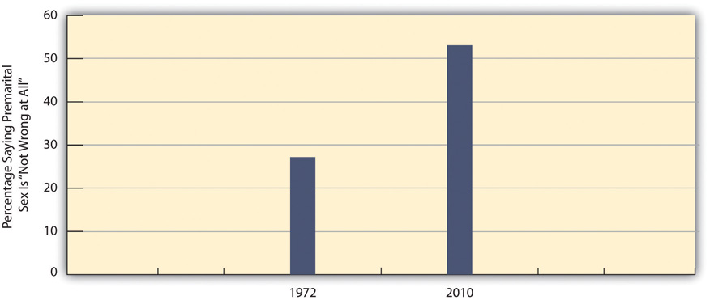Source: Data from General Social Surveys. (1972 and 2010). Retrieved from http://sda.berkeley.edu/cgi-bin/hsda?harcsda+gss10.
On two other issues, extramarital sex and sex between teenagers, views have not changed from a generation ago. Very few Americans today, fewer than 5 percent, think that either type of sexual behavior is “not wrong at all,” and very few thought they were not wrong a generation ago when the GSS asked about these two behaviors. As all these trend data indicate, the sexual revolution changed certain sexual attitudes but did not affect other attitudes. In this respect, then, the sexual revolution was only partly revolutionary.
Certain changes in sexual behavior also occurred as part of the sexual revolution. In particular, many more people began having sex before age 18 during and after the 1960s than before the 1960s and, in a related trend, to have more sexual partners before age 18 (Laumann, Gagnon, Michael, & Michaels, 1994).Laumann, E. O., Gagnon, J. H., Michael, R. T., & Michaels, S. (1994). The social organization of sexuality. Chicago, IL: University of Chicago Press. We can see evidence of the former trend in national survey data reported in Table 9.1 "Percentage Who Had Heterosexual Sex before Age 18", which shows the percentage of people born in different decades (birth cohorts) who had sex before age 18. Among women, less than one-third of those in the 1933–1942 and 1943–1952 birth cohorts (who would all have reached age 18 before the sexual revolution) had sex before age 18. These low figures jumped to 47.6 percent for those in the 1953–1962 birth cohort (who became teenagers in the 1960s and 1970s, during the sexual revolution) and then grew further to 58.2 percent in the next birth cohort. In a twenty-year span, then, women became 28.2 percent more likely (= 58.2 – 30.0) to have sex before age 18. Men, too, became more likely to have sex before age 18, though at a slightly smaller rate of increase, 18.8 percent (= 61.3 – 42.5) over the thirty-year span shown in the table. In related figures, only 30 percent of teenaged girls in 1972 were sexually experienced; by 1988, this figure had jumped to 51 percent (Martinez, Copen, & Abma, 2011).Martinez, G., Copen, C. E., & Abma, J. C. (2011). Teenagers in the United States: Sexual activity, contraceptive use, and childbearing, 2006–2010 national survey of family growth. Vital and Health Statistics, 23(31), 1–35. The remarkable increase in teenage sex for both females and males since the 1960s has had important repercussions down to the present, as we shall see in the section on teenage sex and pregnancy later in this chapter.
Table 9.1 Percentage Who Had Heterosexual Sex before Age 18
| Birth cohort | 1933–1942 | 1943–1952 | 1953–1962 | 1963–1974 |
|---|---|---|---|---|
| Women | 32.2 | 30.0 | 47.6 | 58.2 |
| Men | 42.5 | 47.9 | 56.8 | 61.3 |
Source: Laumann, E. O., Gagnon, J. H., Michael, R. T., & Michaels, S. (1994). The social organization of sexuality. (p. 328) Chicago, IL: University of Chicago Press.
Americans’ attitudes today about heterosexual behavior are very diverse. On some issues, Americans are fairly united, either in a more tolerant and accepting direction or in a less tolerant and unaccepting direction. On other issues, Americans are fairly divided, with large numbers of people feeling one way and large numbers feeling another way. The American public is probably even more diverse in its sexual behavior: Some people have a lot of sex and engage in a variety of sexual activities, while other people have less sex and limit their sexual activity to vaginal intercourse. To gain a sense of what Americans are thinking and doing in the area of heterosexual activity, national surveys provide some important evidence.
As noted earlier, the GSS asks respondents to indicate their views on several types of heterosexual behavior and issues related to this behavior. We’ll first look again at their views about sexual behavior that we examined earlier in the discussion about the sexual revolution. This time we will focus on the percentage who say the behaviors are wrong (“always wrong,” “almost always wrong,” or “sometimes wrong”) (see Figure 9.2 "Views on Sexual Behavior (Percentage Saying the Behavior Is Wrong)").
Figure 9.2 Views on Sexual Behavior (Percentage Saying the Behavior Is Wrong)
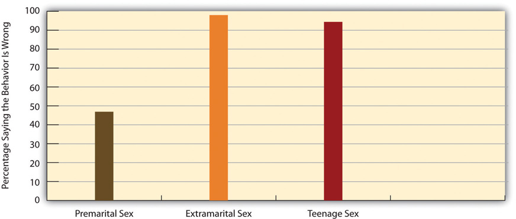Source: Data from General Social Survey. (2010). Retrieved from http://sda.berkeley.edu/cgi-bin/hsda?harcsda+gss10.
Figure 9.2 "Views on Sexual Behavior (Percentage Saying the Behavior Is Wrong)" shows that Americans almost unanimously think that adultery (extramarital sex) and teenage sex are wrong, but that they are fairly evenly split on whether premarital sex is wrong, with 47 percent saying it is wrong and the remainder, 53 percent, saying it is not wrong at all.
Certain aspects of our social backgrounds predict our views about premarital sex. In particular, women, older people, and those who are more religious are more likely than their counterparts to disapprove of it. We see evidence of these trends in Figure 9.3 "Correlates of Disapproval of Premarital Sex (Percentage Saying Premarital Sex between a Woman and a Man Is Wrong)", which focuses on the percentage of GSS respondents who say that premarital sex is wrong (always wrong, almost always wrong, or sometimes wrong). Gender and age are moderately related to views about premarital sex, while religiosity is strongly related to these views.
Figure 9.3 Correlates of Disapproval of Premarital Sex (Percentage Saying Premarital Sex between a Woman and a Man Is Wrong)
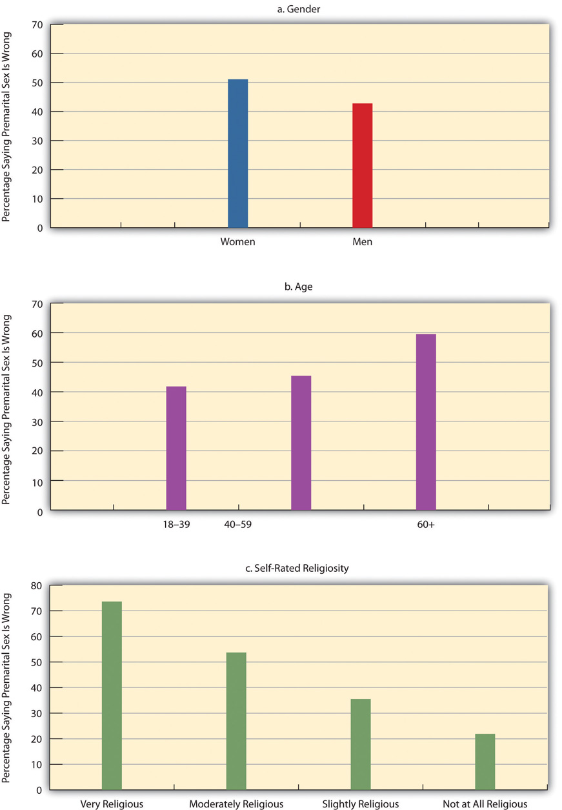Source: Data from General Social Survey. (2010). Retrieved from http://sda.berkeley.edu/cgi-bin/hsda?harcsda+gss10.
A good understanding of Americans’ sexual behaviors comes from the 2006–2008 National Survey of Family Growth (NSFG), which was administered to 13,459 Americans ages 15–44 nationwide. Although this survey omits people older than 44, it still yields valuable information about people in their prime reproductive years. Chapter 5 "Sexual Orientation and Inequality" on sexual orientation also used some NSFG data.
Table 9.2 "Lifetime Prevalence of Sexual Behaviors, Ages 15–24*" reports some NSFG gender-based data on several kinds of sexual behaviors for young people ages 15–24. Although many people think that males are much more sexually active than females, the data in Table 9.2 "Lifetime Prevalence of Sexual Behaviors, Ages 15–24*" show that the gender differences in heterosexual contact are practically nonexistent. Reflecting a conclusion from Chapter 5 "Sexual Orientation and Inequality"’s discussion of sexual orientation, however, females are more likely than males to have had same-sex sexual contact. In one other gender difference not reported in the table, males (17.6 percent) are more likely than females (9.4 percent) to have at least two heterosexual partners in the past year. In this specific sexual activity, then, males are indeed more active than females.
Table 9.2 Lifetime Prevalence of Sexual Behaviors, Ages 15–24*
| Females | Males | |
|---|---|---|
| No sexual contact | 28.6 | 27.2 |
| Any opposite-sex contact | 70.1 | 71.7 |
| Any opposite-sex contact: vaginal intercourse | 65.1 | 62.9 |
| Any opposite-sex contact: gave or received oral sex | 62.6 | 64.0 |
| Any opposite-sex contact: anal sex | 20.2 | 20.9 |
| Any same-sex behavior | 13.4 | 4.0 |
| * Percentage engaging in behavior at least once | ||
Source: Chandra, A., Mosher, W. D., Copen, C., & Sionean, C. (2011). Sexual behavior, sexual attraction, and sexual identity in the United States: Data from the 2006–2008 national survey of family growth (National Health Statistics Reports: Number 36). Hyattsville, MD: National Center for Health Statistics.
We saw earlier that higher degrees of religiosity are strongly associated with greater disapproval of premarital sex. Does this mean that religiosity should also be associated with a lower likelihood of actually engaging in premarital sex? The answer is clearly yes, as many studies of adolescents find that those who are more religious are more likely to still be virgins and, if they have had sex, more likely to have had fewer sexual partners (Regenerus, 2007).Regenerus, M. D. (2007). Forbidden fruit: Sex & religion in the lives of American teenagers. New York, NY: Oxford Univeristy Press. Survey data on adults yield a similar finding: Among all never-married adults in the GSS, those who are more religious are also more likely to have had fewer sexual partners (Barkan, 2006).Barkan, S. E. (2006). Religiosity and premarital sex during adulthood. Journal for the Scientific Study of Religion, 45, 407–417. We see evidence of this relationship in Table 9.3 "Self-Rated Religiosity and Number of Sexual Partners in Past Five Years among Never-Married Adults Ages 18–39 (%)", which shows that among never-married adults ages 18–39, those who are very religious are more likely to have had no sexual partners in the past five years and, if they have had any partners, to have had fewer partners. Although it is hypothetically possible that not having sexual partners leads someone to become more religious, it is much more likely that being very religious reduces the number of sexual partners that never-married adults have.
Table 9.3 Self-Rated Religiosity and Number of Sexual Partners in Past Five Years among Never-Married Adults Ages 18–39 (%)
| Number of sexual partners | Very religious | Moderately religious | Slightly religious or not at all religious |
|---|---|---|---|
| 0 | 31.1 | 7.6 | 9.2 |
| 1 | 29.5 | 29.6 | 21.6 |
| 2 or more | 39.4 | 62.8 | 69.2 |
Source: Data from General Social Surveys. (2006–2010). Retrieved from http://sda.berkeley.edu/cgi-bin/hsda?harcsda+gss10.
We saw earlier that the percentage of teenagers who have sex greatly increased during the 1960s and 1970s. Regardless of what one thinks about premarital sex, this increase had at least two important practical consequences: It greatly increased the risk of teenage pregnancy, and it greatly increased the risk of getting HIV and other sexually transmitted diseases (STDs). For these and other reasons, teenage sex rightly arouses much concern. This section examines trends in teenage sex and pregnancy, the reasons for these trends, and possible measures for reducing teenage pregnancy. As part of this examination, it also discusses sexually transmitted disease, which affects sexually active teens but also sexually active people beyond their teen years.
As noted earlier, teenagers are much more sexually active today than they were before the sexual revolution. About 43 percent of never-married teens ages 15–19 of both sexes have had sexual intercourse (Martinez et al., 2011);Martinez, G., Copen, C. E., & Abma, J. C. (2011). Teenagers in the United States: Sexual activity, contraceptive use, and childbearing, 2006–2010 national survey of family growth. Vital and Health Statistics, 23(31), 1–35. this percentage represents a drop from its highest point, in 1988, of 51 percent for females and of 60 percent for males. About three-fourths of girls in today’s sexually experienced group and 85 percent of boys in this group use contraception, most often a condom, the first time they ever have sex. In their most recent act of sexual intercourse, almost 86 percent of girls and 93 percent of boys used contraception, again most often a condom.
The birth rate for females aged 15–19 in 2009 was 39.1 births per 1,000 females. This rate represented a substantial decline from the early 1990s, when the rate reached a peak of almost 60. However, it was still twice as high as Canada’s rate and much higher yet than other Western democracies (see Figure 9.4 "Teenage Birth Rates in Selected Western Democracies (Number of Annual Births per 1,000 Women Aged 15–19)").
Figure 9.4 Teenage Birth Rates in Selected Western Democracies (Number of Annual Births per 1,000 Women Aged 15–19)
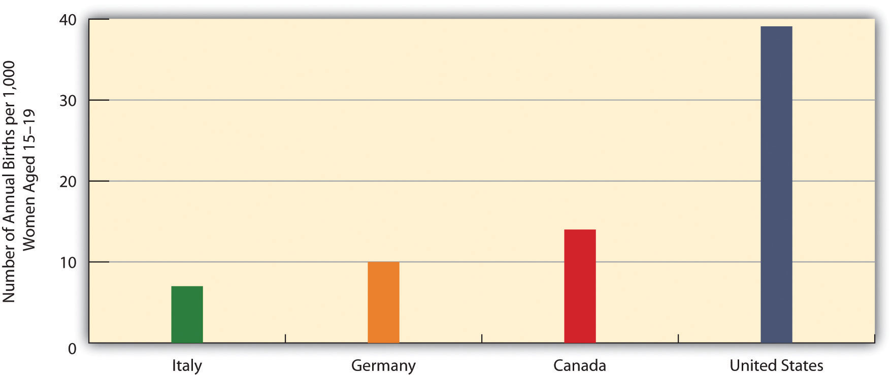Source: Data from Martinez, G., Copen, C. E., & Abma, J. C. (2011). Teenagers in the United States: Sexual activity, contraceptive use, and childbearing, 2006–2010 national survey of family growth. Vital and Health Statistics, 23(31), 1–35.
If 43 percent of teens have had sexual intercourse, that means the majority of teens, 57 percent, have never had intercourse. It is interesting to examine their reasons for still being virgins. Table 9.4 "Main Reason Given for Never Having Sexual Intercourse, Ages 15–19 (%)" shows the relevant data. The top reason for both sexes is religion and morals, followed by concern about a possible pregnancy and not having found the right person with whom to have sex.
Table 9.4 Main Reason Given for Never Having Sexual Intercourse, Ages 15–19 (%)
| Females | Males | |
|---|---|---|
| Against religion or morals | 38 | 31 |
| Don’t want to get (a female) pregnant | 19 | 25 |
| Haven’t found the right person yet | 17 | 21 |
| Don’t want to get an STD | 7 | 10 |
| In a relationship, but waiting for the right time | 7 | 5 |
| Other reason | 12 | 8 |
Source: Martinez, G., Copen, C. E., & Abma, J. C. (2011). Teenagers in the United States: Sexual activity, contraceptive use, and childbearing, 2006–2010 national survey of family growth. Vital and Health Statistics, 23(31), 1–35.
Most teenage pregnancies and births are unplanned and are part of a more general problem for all women in their childbearing years. About one-half of all pregnancies in the United States, or more than 3 million pregnancies annually, are unplanned. Approximately 40 percent of these unplanned pregnancies end in abortion, and about 10 percent end by miscarriage. Putting all these numbers together, about 1.6 million live births happen each year as a result of unplanned pregnancies (National Campaign to Prevent Teen and Unplanned Pregnancy, 2011).National Campaign to Prevent Teen and Unplanned Pregnancy. (2011). National data. Retrieved October 12, 2011, from http://www.thenationalcampaign.org/national-data/default.aspx. The cost of medical services for unplanned pregnancies and for the infants that are born from many of them cost the nation more than $11 billion annually (Gold, 2011).Gold, R. B. (2011). Wise investment: Reducing the steep cost to Medicaid of unintended pregnancy in the United States. Guttmacher Policy Review, 14(3), 6–10.
About one-fifth of all unplanned pregnancies, or almost 700,000 annually, occur to teenagers; another 50,000 teenage pregnancies are planned. These two figures add to 750,000 teenage pregnancies annually, with some 400,000 births resulting from these pregnancies (Kost, Henshaw, & Carlin, 2010).Kost, K., Henshaw, S., & Carlin, L. (2010). US teenage pregnancies, births and abortions: National and state trends and trends by race and ethnicity, 2010. New York, NY: Guttmacher Institute. Altogether, about 18 percent of women, or one of every six females, become teen mothers, and in several southern and southwestern states this percentage is as high as 25–30 percent (Perper & Manlove, 2009).Perper, K., & Manlove, J. (2009). Estimated percentage of females who will become teen mothers: Differences across states. Washington, DC: Child Trends.
Although teenaged pregnancies (and births from these pregnancies) are far from the majority of all pregnancies, unplanned or planned, they pose special problems (American College of Obstetricians and Gynecologists, 2011; Anderson, 2011).American College of Obstetricians and Gynecologists. (2011). Having a baby. Retrieved October 12, 2011, from http://www.acog.org/publications/faq/faq103.cfm#10; Anderson, T. L. (2011). Sex, drugs, and death: Addressing youth problems in American society. New York: Routledge. On the individual level, pregnant teenagers are more at risk than older pregnant women for high blood pressure and anemia, and they are also more likely to experience early labor, premature birth, and low birth weight. In addition, because teenagers are more likely than adults to have STDs, pregnant teenagers are more likely than older pregnant women to have an STD while they are pregnant, either because they already had an STD when they conceived or because they contract an STD from having sex during pregnancy.
Many pregnant teenagers decide to drop out of school. If they stay in school, they often must deal with the embarrassment of being pregnant, and the physical and emotional difficulties accompanying their teenage pregnancy can affect their school performance. Once the baby is born, child care typically becomes an enormous problem, whether or not the new mother is in school. Because pregnant teenagers disproportionately come from families that are poor or near poor, they have few financial resources and often have weak social support networks, either before or after the baby is born (Andrews & Moore, 2011).Andrews, K. M., & Moore, K. A. (2011). Second chance homes: A resource for teen mothers. Retrieved October 15, 2011, from http://www.childtrends.org/Files//Child_Trends-2011_04_15_RB_2ndChanceHomes.pdf.
At the societal level, teenage pregnancy and motherhood are very costly in at least two important respects. First, because pregnancy and childbirth complications are more common among teenagers, their health-care expenses during and after pregnancy and childbirth are often higher than the expenses incurred by older women. Medicaid, the federal government’s national health plan for poor families, often covers much of these expenses, and the premiums that private health insurance companies charge are higher than otherwise because of their expenses when they insure the families of pregnant teenagers.
Second, the children of teenage mothers are at risk for several kinds of behavioral and developmental problems. The Note 9.7 "Children and Our Future" box discusses these problems further.
Kids Having Kids: The Children of Teenage Mothers
Teenage mothers (ages 15–19) are often unprepared emotionally or practically to raise a child. They often have poor parenting skills and, for example, do not take the time to read daily to their children and otherwise stimulate their cognitive development. They are also less likely than older mothers to provide proper emotional support for their children. In addition, the stress they experience as very young mothers puts them at risk for neglecting or abusing their children. The fact that teenage mothers tend to come from low-income families and continue to live in poverty or near poverty after they become mothers compounds all these problems.
For all these reasons, the children of teenage mothers are at greater risk for several kinds of problems. These problems include impaired neurological development, behavioral problems, and poor school performance.
In particular, when compared to children born to older mothers, the children of teen mothers have lower cognitive scores on the average when they start kindergarten, and they continue to have lower math, reading, and vocabulary test scores as they grow older. These problems persist into their own adolescence, as they are less likely than children of older mothers to graduate from high school. Children of teen mothers are also somewhat more likely to have chronic health problems during childhood and adolescence. When the children of teenage mothers become adolescents, they are also more at risk for delinquency and drug use and to have a prison record by the time they reach young adulthood.
The teenage pregnancy and birth rates in the United States are by far the highest of all Western democracies. The problems that children of teen mothers experience underscore the need for our nation to do everything possible to prevent teenage pregnancy.
Sources: Andrews & Moore, 2011; Hoffman & Maynard, 2008Andrews, K. M., & Moore, K. A. (2011). Second chance homes: A resource for teen mothers. Retrieved October 15, 2011, from http://www.childtrends.org/Files//Child_Trends-2011_04_15_RB_2ndChanceHomes.pdf; Hoffman, S. D., & Maynard, R. A. (Eds.). (2008). Kids having kids: Costs and social consequences of teen pregnancy (2nd ed.). Washington, DC: Urban Institute Press.
The bad news is that there are far too many teenage pregnancies. The good news is that the rate of teenage pregnancy has declined rather dramatically since the early 1990s.
The teenage pregnancy rate is commonly expressed as the annual number of pregnancies per 1,000 women aged 15–19. In 2006, this rate was 71.5, equal to 7.15 percent of all women in this age bracket (Kost et al., 2010).Kost, K., Henshaw, S., & Carlin, L. (2010). US teenage pregnancies, births and abortions: National and state trends and trends by race and ethnicity, 2010. New York, NY: Guttmacher Institute. Because many women in this age group either have never had sex or have not had sex in the past year, it is instructive to consider the pregnancy rate among women ages 15–19 who are sexually active. In 2006, this rate was 152.8 per 1,000, equal to 15.28 percent of all sexually active women in this age group.
As high as these rates are, and they are much higher than the rates in other Western democracies, the US teenage pregnancy rate is much lower now than it was in the early 1990s. Figure 9.5 "Pregnancy Rates for US Women Aged 15–19, 1972–2006 (Number of Pregnancies per 1,000 Women Aged 15–19)" displays this dramatic trend. Teenage pregnancy reached a peak rate of 116.9 in 1990 before falling rather steadily to its 2006 rate of 71.5, a much lower rate than existed during the early 1970s. Reflecting the decline in teenage pregnancy, teenage births, as noted earlier, also reached a record low of 39.1 births per 1,000 women ages 15–19 in 2009, as compared to its peak rate of 61.8 in 1991. Despite this dramatic decline, the US teenage birth rate remains the highest of all Western democracies. Experts attribute the decline in teenage pregnancy and birth mostly to increased contraceptive use (stemming from a combination of increased sex education in the schools and increased provision of contraceptives to teenagers) and, to a smaller extent, to reduced sexual activity among some teenagers (Kost et al., 2010).Kost, K., Henshaw, S., & Carlin, L. (2010). US teenage pregnancies, births and abortions: National and state trends and trends by race and ethnicity, 2010. New York, NY: Guttmacher Institute.
Figure 9.5 Pregnancy Rates for US Women Aged 15–19, 1972–2006 (Number of Pregnancies per 1,000 Women Aged 15–19)
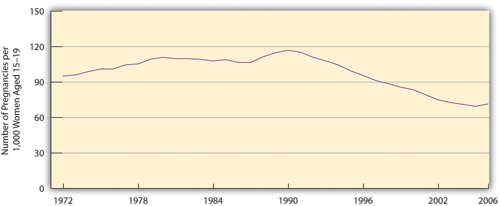Source: Data from Kost, K., Henshaw, S., & Carlin, L. (2010). US teenage pregnancies, births and abortions: National and state trends and trends by race and ethnicity, 2010. New York, NY: Guttmacher Institute.
We have already noted that teenagers from poor or near-poor families are at greater risk for becoming pregnant. In addition to social class, two other important correlates of teenage pregnancy are race/ethnicity and geography.
Figure 9.6 "Race/Ethnicity and Teenage Pregnancy, 2006 (Number of Pregnancies per 1,000 Women Aged 15–19)" displays the racial/ethnic differences for teenage pregnancy, which are rather large. The pregnancy rates for black and Hispanic teenagers are almost three times greater than the rates for non-Hispanic whites.
Figure 9.6 Race/Ethnicity and Teenage Pregnancy, 2006 (Number of Pregnancies per 1,000 Women Aged 15–19)
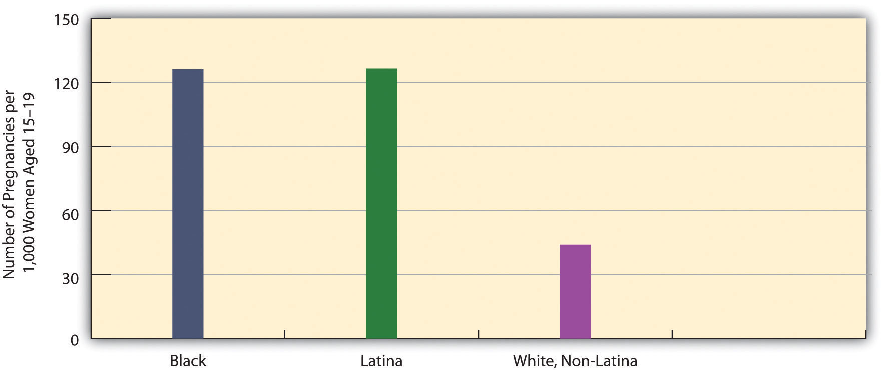Source: Data from Kost, K., Henshaw, S., & Carlin, L. (2010). US teenage pregnancies, births and abortions: National and state trends and trends by race and ethnicity, 2010. New York, NY: Guttmacher Institute.
Large differences also exist in teenage pregnancy rates by state and the regions of the country into which the states fall. In general, the South has a higher teenage pregnancy rate than the rest of the nation (see Figure 9.7 "Teenage Pregnancy Rates in the United States, 2005 (Number of Pregnancies per 1,000 Women Aged 15–19)"), although there are individual differences by state. The South’s generally higher rate stems largely from its higher poverty rate and racial/ethnic composition. As the opening news story on Texas indicates, sex education programs emphasizing safe sex are also less common in Southern states than in many other states. The same difference holds for the provision of contraceptives by Planned Parenthood and other agencies and organizations. The lack of these two important pregnancy-prevention measures probably also contributes to the South’s higher teenage pregnancy rate.
Figure 9.7 Teenage Pregnancy Rates in the United States, 2005 (Number of Pregnancies per 1,000 Women Aged 15–19)
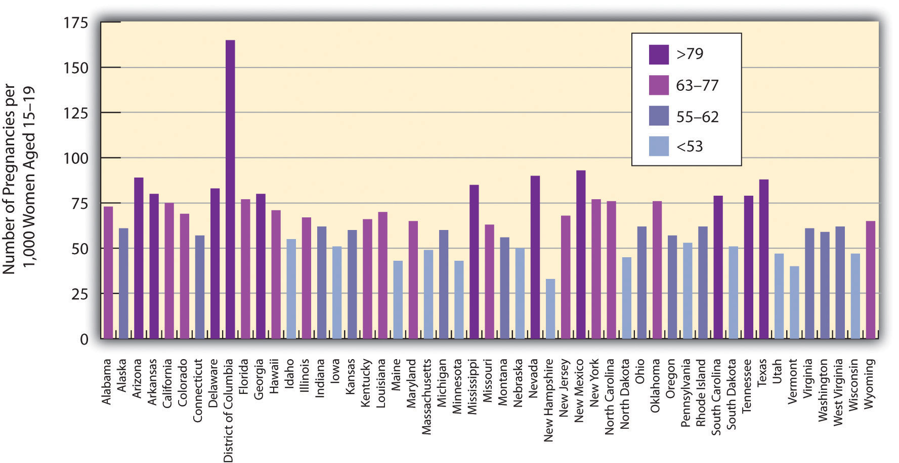Source: Data from Kost, K., Henshaw, S., & Carlin, L. (2010). US teenage pregnancies, births and abortions: National and state trends and trends by race and ethnicity, 2010. New York, NY: Guttmacher Institute.
In addition to pregnancy and birth, another problem associated with teenage sexual activity is the transmission of sexually transmitted diseases (STDs). This is a problem during the teenage years, but it is even more of a problem during young adulthood, when sexual activity is greater than during adolescence (Wildsmith, Schelar, Peterson, & Manlove, 2010).Wildsmith, E., Schelar, E., Peterson, K., & Manlove, J. (2010). Sexually transmitted diseases among young adults: Prevalence, perceived risk, and risk-taking behavior. Retrieved October 15, 2011, from http://www.childtrends.org/Files//Child_Trends-2010_05_01_RB_STD.pdf. The STD rate in the United States is higher than in most other Western democracies. Almost 19 million new cases of STDs are diagnosed annually, and more than 65 million Americans have an incurable STD such as herpes. Although teens and young adults ages 15–24 compose only one-fourth of sexually active people, they account for one-half of all new STDs. Despite this fact, most young adults who test positive for an STD did not believe they were at risk for getting an STD (Wildsmith et al., 2010).Wildsmith, E., Schelar, E., Peterson, K., & Manlove, J. (2010). Sexually transmitted diseases among young adults: Prevalence, perceived risk, and risk-taking behavior. Retrieved October 15, 2011, from http://www.childtrends.org/Files//Child_Trends-2010_05_01_RB_STD.pdf.
In any one year, 15 percent of young adults ages 18 and 26 have an STD. This figure masks a significant gender difference: 20 percent of young women have had an STD in the past year, compared to 10 percent of young men. It also masks important racial/ethnic differences: 34 percent of young African Americans have had an STD in the past year, compared to 10 percent of Asians, 15 percent of Hispanics, and 10 percent of whites.
Three types of sexual behaviors increase the risk of transmitting or contracting an STD: having sex with at least three partners during the past year, having a sex partner with a known STD, and not using a condom regularly. About 17 percent of sexually active young adults have had at least three partners during the past year, and 8 percent have had a partner with a known STD. Three-fourths of unmarried sexually active young adults do not use a condom regularly. Combining all these risk factors, 39 percent have engaged in one risk factor in the past year, 14 percent have engaged in at least two risk factors, and the remainder, 48 percent, have engaged in no risk factors (Wildsmith et al., 2010).Wildsmith, E., Schelar, E., Peterson, K., & Manlove, J. (2010). Sexually transmitted diseases among young adults: Prevalence, perceived risk, and risk-taking behavior. Retrieved October 15, 2011, from http://www.childtrends.org/Files//Child_Trends-2010_05_01_RB_STD.pdf.
Teenage pregnancies cannot occur in either of these two situations: (1) Teenagers do not have sex, or (2) they use effective contraception if they do have sex. If we could wave a magic wand or turn the clock back to before the 1960s, it might be possible to greatly reduce the number of teenagers who have sex, but that day is long past. Teenage sex increased during the 1960s and 1970s and, despite some slight declines after HIV and AIDS became a worldwide problem during the 1980s and 1990s, remains much more frequent than before the sexual revolution. Most sexual behavior researchers believe that pleas for abstinence, as well as sex education programs that focus solely or almost entirely on abstinence, do not help to reduce teen sex and pregnancy (Ball & Moore, 2008).Ball, V., & Moore, K. A. (2008). What works for adolescent reproductive health: Lessons from experimental evaluations of programs and interventions. Retrieved October 14, 2011, from http://www.childtrends.org/Files/Child_Trends-2008_05_20_FS_WhatWorksRepro.pdf.
If this is true, they say, then the best strategy is to use a harm reduction approach. We first encountered this term in Chapter 7 "Alcohol and Other Drugs"’s discussion of illegal drugs. A harm reduction approach recognizes that because certain types of harmful behavior are inevitable, our society should do its best to minimize the various kinds of harm that these various behaviors generate. In regard to teenage sex and pregnancy, a harm reduction approach has two goals: (1) to help reduce the risk for pregnancy among sexually active teens and (2) to help teenage mothers and their children.
To achieve the first goal, parents, sex education classes, family planning clinics, youth development programs, and other parties must continue to emphasize the importance of waiting to have sex but also the need for teenagers to use contraception if they are sexually active. In addition, effective contraception (birth control pills, other hormonal control, and also condoms, which protect against STDs) must be made available for teenagers at little or no cost. Studies indicate that these two contraception strategies do not lead to more teenage sex, and they also indicate that consistent contraceptive use greatly reduces the risk of teenage pregnancy. As one writer has summarized these studies’ conclusions, “Contraceptives no more cause sex than umbrellas cause rain…When contraception is unavailable, the likely consequences is not less sex, but more pregnancy” (Kristof, 2011, p. A31).Kristof, N. D. (2011, November 3). The birth control solution. New York Times, p. A31.
Helping Teenagers Reduce the Risk of Pregnancy
The Metro Council for Teen Potential (MCTP) is a membership coalition in Rochester, New York, that “promotes a comprehensive community-wide approach to foster youth assets and youth health,” according to its website. To do so, MCTP provides various kinds of information to its member agencies and organizations, including the latest data on pregnancy and other problems facing teens and the latest information on the “best practices” to use to help teens. It has also developed a youth curriculum and media campaign aimed at informing youths about risky behaviors, sexuality, and other aspects of their lives. Its member groups include the Rochester School District and youth development organizations throughout Rochester.
An important focus of MCTP’s efforts is teen pregnancy, and MCTP has received substantial funding from the US Centers for Disease Control and Prevention to formulate and implement strategies to prevent teen pregnancies. Its website includes results from a random survey of Rochester-area teens about their sexual behavior, views about teen pregnancy, substance use, and other behaviors and attitudes. The website also includes some basic data on Rochester teens’ sexual experiences. For example, the 2006 teen birth rate in Rochester was 76 births per 1,000 girls ages 15–19; this rate was much higher than the US rate of 42 and the New York state rate of 26.
MCTP supports several initiatives in Rochester that focus on teenage sexuality and pregnancy. One set of programs called CONECTS provides a variety of teenage pregnancy prevention strategies through such subcontractors as the YWCA. Another program, In-Control, provides reproductive health care and education through Planned Parenthood. A third program, Family Talk, involves workshops that aim to help parents of teens talk more effectively with their children about sexuality and substance abuse.
For these and other efforts, MCTP has won the Organizational Award from the Youth Services Quality Council for the high quality of its work for youths and their families. In helping to reduce teen pregnancy and address other problems facing teenagers in Rochester, the Metro Council for Teen Potential is making a difference. For further information, visit its website at http://www.metrocouncil.us.
In this regard, a recent report of the Guttmacher Institute called contraception a “proven, cost-effective strategy” (Gold, 2011, p. 7).Gold, R. B. (2011). Wise investment: Reducing the steep cost to Medicaid of unintended pregnancy in the United States. Guttmacher Policy Review, 14(3), 6–10. It added, “Contraception is almost universally accepted as a way to reduce the risk of unintended pregnancy…Contraceptive use reduces the risk of unintended pregnancy significantly, and consistent contraceptive use virtually eliminates it.” The report noted that government-funded family planning agencies prevent 2 million unintended pregnancies annually by providing contraception to 9 million young and low-income women each year. Because most of the women who would have these prevented pregnancies would be eligible for Medicaid, the Medicaid savings from these prevented pregnancies amount to about $7 billion annually. An expansion of family planning services would almost certainly be an effective strategy for reducing teenage pregnancies as well as unplanned pregnancies among older women.
Another strategy to prevent teenage pregnancy involves the use of early childhood intervention (ECI) programsPrograms that typically involve visits by social workers, nurses, and other professionals to the homes of children who are at risk for neurological, emotional, and/or behavioral problems during their childhood and adolescence.. Many such programs exist, but they generally involve visits by social workers, nurses, and other professionals to the homes of children who are at risk for neurological, emotional, and/or behavioral problems during their first several years and also as they grow into adolescents and young adults (Kahn & Moore, 2010).Kahn, J., & Moore, K. A. (2010). What works for home visiting programs: Lessons from experimental evaluations of programs and interventions. Retrieved October 16, 2011, from http://www.childtrends.org/Files//Child_Trends-2010_7_1_FS_WWHomeVisitpdf.pdf. It might sound like a stereotype, but these children are disproportionately born to single, teenage mothers and/or to slightly older parents who live in poverty or near poverty. Long-term evaluation studies show that the best of these programs reduce the likelihood that the very young children they help will become pregnant or have children of their own after they become teenagers (Ball & Moore, 2008).Ball, V., & Moore, K. A. (2008). What works for adolescent reproductive health: Lessons from experimental evaluations of programs and interventions. Retrieved October 14, 2011, from http://www.childtrends.org/Files/Child_Trends-2008_05_20_FS_WhatWorksRepro.pdf. In effect, helping young children today helps prevent teenage pregnancy tomorrow.
Because teen pregnancies occur despite the best prevention efforts, the second goal of a harm reduction approach is to help teens during their pregnancy and after childbirth. This strategy has the immediate aim of providing practical and emotional support for these very young mothers; it also has the longer-term aims of reducing repeat pregnancies and births and of preventing developmental and behavior problems among their children.
To achieve these aims, ECI programs have again been shown to be helpful (Ball & Moore, 2008).Ball, V., & Moore, K. A. (2008). What works for adolescent reproductive health: Lessons from experimental evaluations of programs and interventions. Retrieved October 14, 2011, from http://www.childtrends.org/Files/Child_Trends-2008_05_20_FS_WhatWorksRepro.pdf. Another type of program to help teen mothers involves the use of second-chance homesMaternity group homes for unmarried teen mothers., which are maternity group homes for unmarried teen mothers (Andrews & Moore, 2011).Andrews, K. M., & Moore, K. A. (2011). Second chance homes: A resource for teen mothers. Retrieved October 15, 2011, from http://www.childtrends.org/Files//Child_Trends-2011_04_15_RB_2ndChanceHomes.pdf. One of the many sad facts of teenage motherhood is that teen mothers often have nowhere to live. A teen mother’s parent(s) may refuse to let her and her infant live with them, either because they are angry at her pregnancy or because they simply do not have the room or financial means to house and take care of a baby. Or a pregnant teen may decide to leave her parents’ home because of the parents’ anger or because they refuse to let her continue seeing the child’s father. In another possibility, a teen mother may begin living with the father, but these unions are typically unstable and often end, again leaving her and her child without a home. As well, many teen mothers were runaways from home before they became pregnant or were living in foster care. Because of all these situations, many teen mothers find themselves without a place to live.
Second-chance homes provide many kinds of services for pregnant teenagers and teen mothers, many of whom are unable to continue living with their own parents.
Image Courtesy of Polina Sergeeva, http://www.flickr.com/photos/polinasergeeva/3020746873/.
In second-chance homes (which, depending on the program, are in reality one large house, a set of apartments, or a network of houses), mothers and children (as well as pregnant teens) receive shelter and food, but they also receive important services, such as childrearing help, educational and vocational counseling and training, family planning counseling, and parenting classes. Although rigorous evaluation studies do not yet exist of the effectiveness of second-chance homes, they do seem to offer a valuable resource for teen mothers and their children (Andrews & Moore, 2011).Andrews, K. M., & Moore, K. A. (2011). Second chance homes: A resource for teen mothers. Retrieved October 15, 2011, from http://www.childtrends.org/Files//Child_Trends-2011_04_15_RB_2ndChanceHomes.pdf.
A final strategy for addressing the problem of teenage sex and pregnancy is to address a more general societal condition that helps produce teenage sex and pregnancy. This condition is poverty. As noted earlier, children who grow up in poor families and in disadvantaged neighborhoods—those with high rates of poverty, unemployment, high school dropouts, and so forth—are more likely to have sex earlier as teens and to become pregnant (Harding, 2003; Scott, Steward-Streng, Barry, & Manlove, 2011).Harding, D. J. (2003). Counterfactual models of neighborhood effects: The effect of neighborhood poverty on dropping out and teenage pregnancy. American Journal of Sociology, 109(3), 676–719; Scott, M. E., Steward-Streng, N. R., Barry, M. C., & Manlove, J. (2011, March). Neighborhood, family and school environments: Associations with the timing of adolescent first sex. Paper presented at the Population Association of America, Washington, DC. Efforts that reduce poverty (see Chapter 2 "Poverty") and improve the conditions of disadvantaged neighborhoods will also reduce the collateral effects of poverty, including teenage pregnancy.
A major consequence of unplanned pregnancy, during or after the teen years, is abortion. As noted earlier, about 40 percent of all unplanned pregnancies are terminated by an abortion. The more we can reduce unplanned pregnancies through the various strategies just discussed, the fewer abortions we will have. This section presents some additional information on abortion while acknowledging the incredibly strong passions that abortion raises on both sides of the issue. Many people believe that abortion represents a woman’s right to control her own body, while many other people believe that abortion is murder. We will not review these arguments, which should be very familiar by now, but we will look at the history of abortion and present some public opinion data about abortion and public health data on its prevalence. We end with a brief discussion of abortion policy.
Like drug use discussed in Chapter 7 "Alcohol and Other Drugs" and prostitution discussed later in this chapter, abortion has a very long history. In fact, sex historians Vern Bullough and Bonnie Bullough (1977, p. 92)Bullough, V. L., & Bullough, B. (1977). Sin, sickness, and sanity: A history of sexual attitudes. New York, NY: New American Library. note that abortion has “been widely practiced since the beginning of recorded history.” Although early Christianity regarded abortion as murder, there was no general agreement regarding how old the fetus must be for an abortion to be considered murder. During the Middle Ages, most religious scholars thought abortion was not murder unless quickening (when a woman begins to feel the fetus moving) had occurred, which is usually about four to five months into a pregnancy. In a notable development, Pope Pius IX declared in 1869 that abortion was murder no matter how young the fetus was, and that remains the current belief of the Catholic Church.
During the nineteenth century, many countries passed new laws that banned abortion, and most US states did so as well. Bullough and Bullough (1977, p. 111)Bullough, V. L., & Bullough, B. (1977). Sin, sickness, and sanity: A history of sexual attitudes. New York, NY: New American Library. say that these new laws were intended to protect pregnant women from unskilled abortionists, but that the laws backfired because “desperate women turned to illegal practitioners.” Many illegal abortion providers were simply unskilled to perform abortions, but even doctors and midwives who provided abortions illegally did not have access to hospitals or medical clinics if something went wrong. After antibiotics came into use during the twentieth century, illegal abortion providers also did not have access to these miracle drugs and thus could not treat infections that occurred after they performed their abortions. By the early 1960s, the only legal abortions in most states were those done to save the mother’s life, with about 8,000 such therapeutic abortions performed annually.
In addition to these legal abortions, an estimated 400,000–650,000 illegal abortions were also being performed annually by the early 1960s. For the reasons just given, these abortions were often risky procedures and resulted in a “very high maternal mortality rate” (Bullough & Bullough, 1977, p. 112).Bullough, V. L., & Bullough, B. (1977). Sin, sickness, and sanity: A history of sexual attitudes. New York, NY: New American Library. In plain English, many women died from illegal abortions.
The sheer number of illegal abortions and maternal death and health complications helped ignite a new abortion rights movement. This movement also believed that women have the right to control their own bodies without government interference. By 1970, sixteen states had legalized abortion or had made abortions easier to receive under certain circumstances. Some courts began to rule that laws against abortion violated women’s constitutional right to privacy. Finally, the US Supreme Court supported legal abortion in its famous and controversial 1973 decision, Roe v. Wade. This decision allowed all abortions during the first trimester (a roughly three-month period of pregnancy) and permitted states to regulate abortion during the second trimester to protect the mother’s health, but states could still not prohibit abortion during this trimester. For the remaining trimester, states were allowed to prohibit abortion except when the mother’s life or health was at stake.
The legalization of abortion by the Roe decision was controversial from the beginning and remains controversial today (see Note 9.14 "Applying Social Research"). Amid all this controversy, it is important to keep in mind that the Roe decision protected the health and lives of many pregnant women. As the Guttmacher Institute (Cohen, 2009, p. 2)Cohen, S. A. (2009). Facts and consequences: Legality, incidence and safety of abortion worldwide. Guttmacher Policy Review, 12(4), 2–6. explains, “The United States legalized abortion nationwide in 1973, in part because of the clear evidence that restrictive laws were not ending abortion but were exacting a significant public health toll, notably on lower-income women who could not travel or pay for safe services. Almost immediately afterward, pregnancy-related deaths and hospitalizations due to complications of unsafe abortion effectively ended. The United States was not the first country and has been far from the last to recognize this relationship and move to liberalize its law.”
The Abortion and Crime Rate Controversy
In 2001, two scholars published an article on abortion and crime rates. The article concluded that the legalization of abortion after the Supreme Court’s Roe v. Wade decision in 1973 lowered the crime rate two decades later. They reasoned that the Roe decision increased the number of abortions among poor teenagers, whose children are at risk for delinquency and crime when they reach adolescence and young adulthood. Because the increased number of abortions meant that these children were never born, the crime rate in the late 1980s and 1990s was lower than it would have been because of the Roe decision.
This article set off a firestorm of controversy, with people on both sides of the abortion debate appalled at the implication that abortions should be promoted to lower the crime rate many years later. The article also set off a wave of social science research to determine the validity of the article’s conclusion.
The research that has been published in the decade since this controversial article has yielded mixed results. Some studies have found that legal abortion did lower the crime rate; other studies have found that it did not lower the crime rate; and some studies have even found that it raised the crime rate. Even if abortion might have lowered the crime rate during the 1990s, most criminologists think that the crime rate decline during that decade mostly stemmed from other reasons, including more effective policing and a thriving economy.
It remains highly debatable whether any possible crime-reducing effect of abortion is a relevant factor for the debate over legal abortion. Regardless of its possible relevance, however, the social science research on this issue is so equivocal that it is premature to assume that abortion does, in fact, lower the crime rate.
Sources: Chamlin, Myer, & Sanders, 2008; Donohue & Levitt, 2001; Kahane, Paton, & Simmons, 2008Chamlin, M. B., Myer, A. J., & Sanders, B. A. (2008). Abortion as crime control: A cautionary tale. Criminal Justice Policy Review, 19(2), 135–152; Donohue, J. J., & Levitt, S. D. (2001). The impact of legalized abortion on crime. Quarterly Journal of Economics, 116, 379–420; Kahane, L. H., Paton, D., & Simmons, R. (2008). The abortion-crime link: Evidence from England and Wales. Economica, 75(1), 1–21.
Despite the fact that Roe v. Wade ended the health risks of unsafe abortions, access to abortion has weakened in the years since this case was decided in 1973. In a 1992 ruling, Planned Parenthood v. Casey, the Supreme Court weakened Roe by ruling that states could ban abortions after the fetus became viable at twenty-two or twenty-three weeks, which is before the end of the second trimester. This ruling also allowed states to require a twenty-four-hour waiting period, the signing of an informed consent form, and the signing of a parental consent form for minors. Various acts by Congress have also made it more difficult to receive an abortion. In particular, Congressional legislation in 1976 banned Medicaid funding of abortions.
Many states have passed various measures to make it more difficult for a woman to get an abortion. As of March 2012, these selected measures were in effect (Guttmacher Institute, 2012)Guttmacher Institute. (2012). An overview of abortion laws. Retrieved on March 31, 2012 at http://www.guttmacher.org/statecenter/spibs/spib_OAL.pdf.:
Some basic facts about the number of abortions in the United States are essential for a complete understanding of the abortion issue. (Data are for 2008 and come from Jones & Kooistra, 2011).Jones, R. K., & Kooistra, K. (2011). Abortion incidence and access to services in the United States, 2008. Perspectives on Sexual and Reproductive Health, 43, 41–50. Perhaps the most important fact is that about 1.2 million abortions occur annually in the United States, down from a peak of 1.6 million abortions in 1990. This decrease is thought to stem from a drop in unwanted pregnancies (see earlier discussion) and from a decline in facilities that provide abortions because of harassment from abortion opponents and reduced public funding. About 90 percent of abortions are done during the first trimester (approximately twelve weeks).
The abortion rate (number of abortions per 1,000 women ages 15–44) differs by region (2008 data) and is highest in the Northeast and lowest in the Midwest (see Figure 9.8 "Regional Differences in Abortion Rates, 2008"). It should be noted, however, that there is much variation within each region. In the West, for example, the abortion rate is 27.6 in California but only 0.9 in Wyoming.
Figure 9.8 Regional Differences in Abortion Rates, 2008
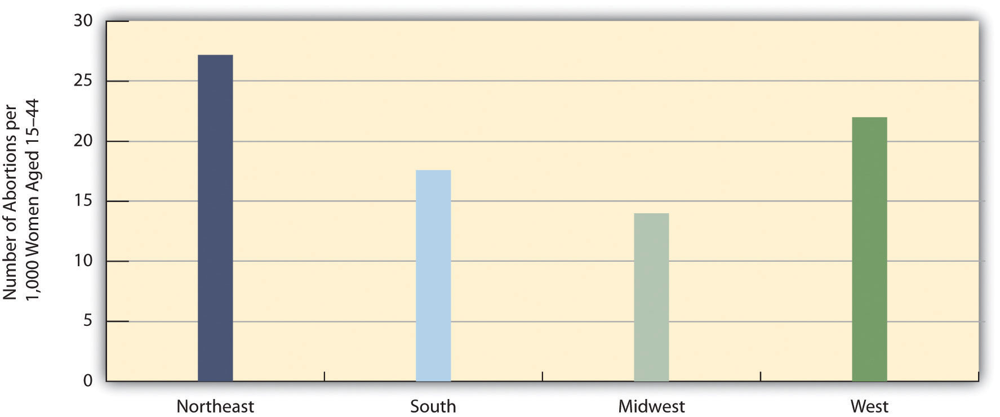Source: Data from Jones, R. K., & Kooistra, K. (2011). Abortion incidence and access to services in the United States, 2008. Perspectives on Sexual and Reproductive Health, 43, 41–50.
These regional and state differences greatly reflect the presence or absence of nearby abortion providers. In many parts of the nation, it is very difficult and even practically impossible for women to get an abortion. Only 13 percent of the more than 3,000 counties in the United States have an abortion provider; one-third of women of childbearing age (15–44) live in the 87 percent of counties that lack any abortion providers (Jones & Kooistra, 2011).Jones, R. K., & Kooistra, K. (2011). Abortion incidence and access to services in the United States, 2008. Perspectives on Sexual and Reproductive Health, 43, 41–50. These women must travel relatively long distances to a provider and may lack the money or transportation to do so. The percentage of women ages 15–44 in counties with no provider reflects the regional abortion rates in Figure 9.8 "Regional Differences in Abortion Rates, 2008". In the Midwest, 52 percent of these women live in counties without a provider. Comparable figures for the other regions are: Northeast, 18 percent; South, 47 percent; and West, 13 percent. About half of all women in the Midwest and South, then, live in counties without an abortion provider.
People tend to hold very strong views about abortion, and the news media regularly report on rallies and other events carried out by both sides of the abortion controversy. This news coverage obscures an important fact about public opinion on abortion: The public largely supports abortions that occur under certain circumstances, while it is divided over abortions that occur under other circumstances. On some types of abortions, then, there is a strong public consensus in a favor of abortion, while on other types of abortions there is much disagreement.
The circumstances for which the public largely supports abortions are those where the physical health of the mother is at stake, where the pregnancy resulted from a rape or act of incest, or where the baby is likely to have a serious defect. The circumstances for which the public is divided on abortion are those where a woman wants an abortion for any other reason, including her wish not to have any more children.
We see evidence of these two patterns of abortion opinion in data from the GSS. The GSS regularly asks a series of questions that begin with the following statement: “Please tell me whether or not you think it should be possible for a pregnant woman to obtain a legal abortion if…” After this initial statement, the question lists a circumstance or reason for an abortion. These scenarios are as follows: (a) The woman’s own health is seriously endangered by the pregnancy; (b) she became pregnant as a result of rape; (c) there is a strong chance of serious defect in the baby; (d) she is married and does not want any more children; (e) the family has a very low income and cannot afford any more children; (f) she is not married and does not want to marry the man; and (g) the woman wants it for any reason.
As Figure 9.9 "Support for Legal Abortion (Percentage Saying a Woman Should Be Able to Obtain a Legal Abortion for Each Circumstance)" shows, strong majorities of the public support a legal abortion for the first three scenarios: the women’s health is endangered, the pregnancy resulted from a rape; or the baby is likely to have a serious defect. On the other hand, only 40–50 percent of the public support a legal abortion for the remaining scenarios: a married woman does not want more children, the family cannot afford more children, an unmarried woman does not want to marry; or a woman wants an abortion for any reason.
Figure 9.9 Support for Legal Abortion (Percentage Saying a Woman Should Be Able to Obtain a Legal Abortion for Each Circumstance)
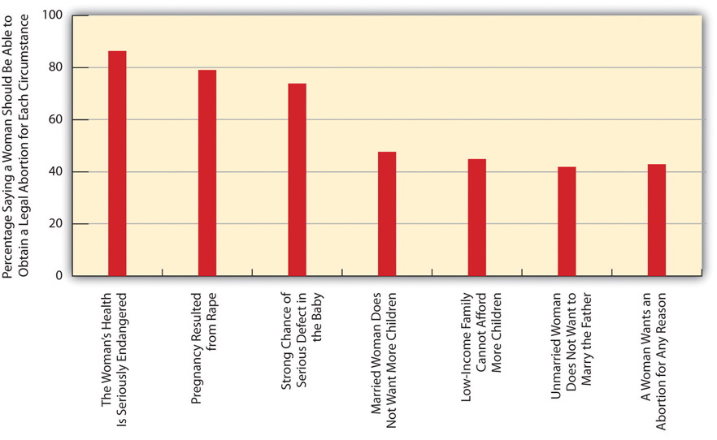Source: Data from General Social Survey. (2010). Retrieved from http://sda.berkeley.edu/cgi-bin/hsda?harcsda+gss10.
Reflecting the sociological principle that our social backgrounds influence our attitudes and behaviors, several aspects of people’s social backgrounds are associated with their views on abortion. We can illustrate this by using the GSS question that asks whether respondents support a legal abortion “for any reason.” In the entire GSS sample, about 43 percent support legal abortion for any reason; using a common term for people who favor legal abortion, they are entirely pro-choice.
You have probably heard many times that people who are religious tend to oppose abortion rights much more than people who are less religious. Using the GSS “for any reason” item, we would thus expect that very religious people would be much less likely than other people to favor abortion for any reason. Figure 9.10 "Self-Rated Religiosity and Support for Legal Abortion for Any Reason (%)" shows this is indeed the case. People who say they are not religious are almost four times more likely than those who are very religious to support a legal abortion for any reason.
Figure 9.10 Self-Rated Religiosity and Support for Legal Abortion for Any Reason (%)
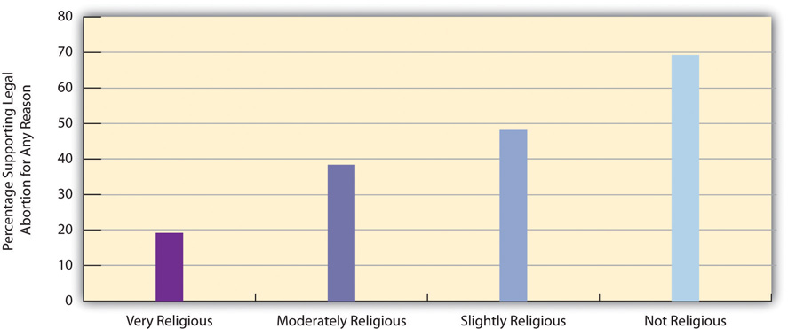Source: Data from General Social Survey. (2010). Retrieved from http://sda.berkeley.edu/cgi-bin/hsda?harcsda+gss10.
You have probably also heard many times that the Catholic Church is a leading opponent of legal abortion. Does this mean that Catholics themselves are less likely than Protestants to support legal abortion for any reason? The answer to this question is no: Figure 9.11 "Religious Preference and Support for Legal Abortion for Any Reason (%)" shows that Catholics and Protestants are about equally likely to favor legal abortion for any reason, with Jews and people with no religious preference about twice as likely to favor it.
Figure 9.11 Religious Preference and Support for Legal Abortion for Any Reason (%)
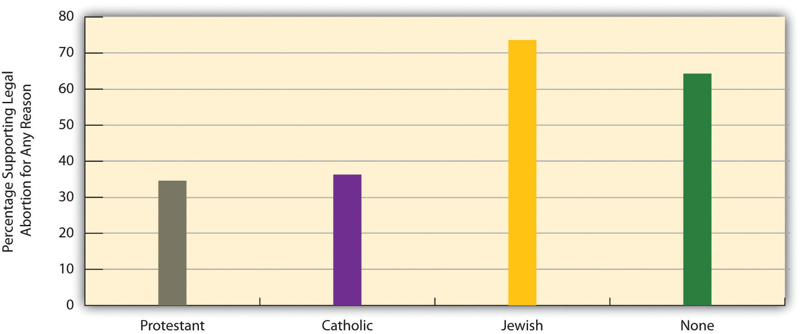Source: Data from General Social Surveys. (2008–2010). Retrieved from http://sda.berkeley.edu/cgi-bin/hsda?harcsda+gss10.
It might make sense to think that women are more likely than men to favor legal abortion. However, there is no gender difference in this regard. As Figure 9.12 "Gender and Support for Legal Abortion for Any Reason (%)" shows, women are in fact slightly less likely than men to favor legal abortion, although the difference shown in the figure is too small to be statistically significant.
Figure 9.12 Gender and Support for Legal Abortion for Any Reason (%)
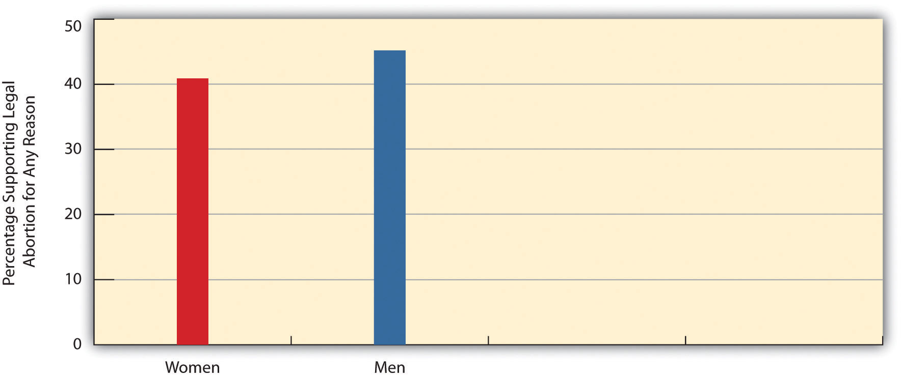Source: Data from General Social Survey. (2010). Retrieved from http://sda.berkeley.edu/cgi-bin/hsda?harcsda+gss10.
Three other aspects of our social backgrounds are rather strongly associated with abortion views: education, our political views, and region of country. People with college degrees are much more likely than those with lower education levels to support legal abortion for any reason (Figure 9.13 "Education and Support for Legal Abortion for Any Reason (%)"); liberals are twice as likely as conservatives to favor legal abortion (Figure 9.14 "Self-Described Political Views and Support for Legal Abortion for Any Reason (%)"); and people in the Northeast and West are more likely to favor legal abortion than people in the South and Midwest.
Figure 9.13 Education and Support for Legal Abortion for Any Reason (%)
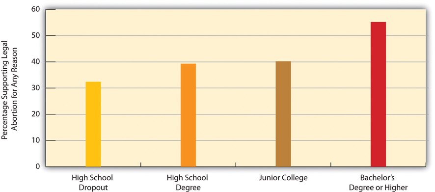Source: Data from General Social Survey. (2010). Retrieved from http://sda.berkeley.edu/cgi-bin/hsda?harcsda+gss10.
Figure 9.14 Self-Described Political Views and Support for Legal Abortion for Any Reason (%)
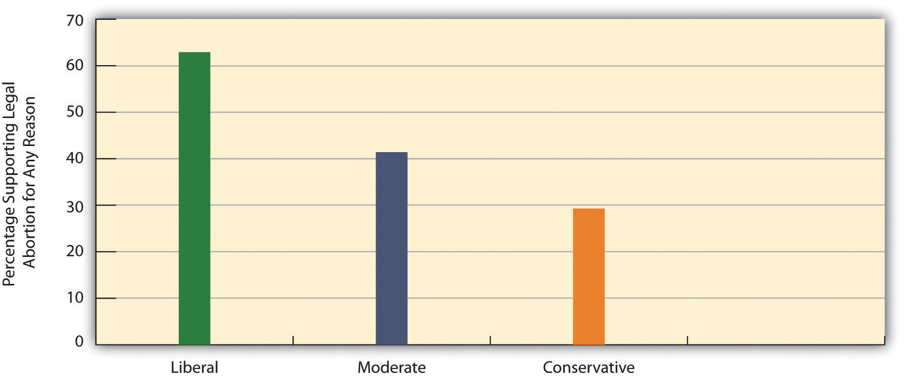Source: Data from General Social Survey. (2010). Retrieved from http://sda.berkeley.edu/cgi-bin/hsda?harcsda+gss10.
Figure 9.15 Region and Support for Legal Abortion for Any Reason (%)
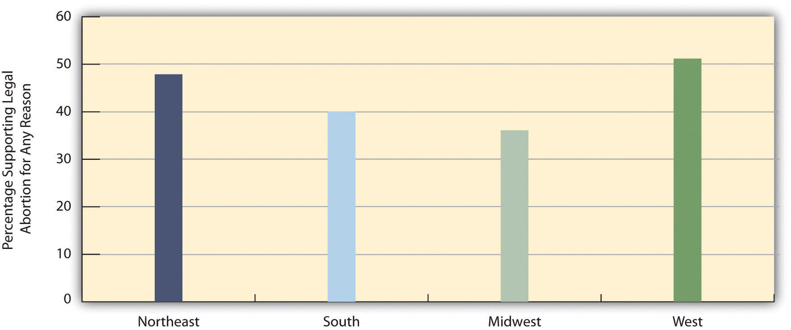Source: Data from General Social Survey. (2010). Retrieved from http://sda.berkeley.edu/cgi-bin/hsda?harcsda+gss10.
No one likes abortions. Abortion rights opponents liken them to murder, and abortion rights proponents are certainly not gleeful when abortions occur. Rather, they recognize that abortions will occur whether they are legal or illegal, and they think that legal abortion protects women from the dangers of illegal abortions and recognizes women’s right to control their own bodies. As President Bill Clinton and Secretary of State Hillary Clinton have summarized the view of abortion rights proponents in various speeches during the past two decades, abortion should be safe, legal, and rare.
Chapter 7 "Alcohol and Other Drugs"’s discussion of illegal drugs emphasized that “what’s past is prologue”: Because drugs have been used since prehistoric times, it is no surprise that illegal drug use remains common today even despite possible arrest and punishment. The long history of abortion suggests that “what’s past is prologue” is again a relevant theme for this particular behavior. Since the beginning of recorded history, women have tried to end their pregnancies. Whatever we might think of abortion, the fact remains that many women will continue to try to end their pregnancies whether abortion is legal or whether it is illegal. As with teenage pregnancy and the use of illegal drugs, a harm reduction approach to abortion again makes sense in view of this basic fact, as we shall now explain.
Around the world, the rate of abortion is generally unrelated to whether it is legal or illegal. Laws against abortions thus do not reduce abortions, but they do cause another very serious problem (Barot, 2011).Barot, S. (2011). Unsafe abortion: The missing link in global efforts to improve maternal health. Guttmacher Policy Review, 14(2), 24–28. When abortion is illegal, women either must have an abortion from an unskilled provider in unhygienic conditions, or they may try to induce their own abortion by inserting an object into their uterus or by ingesting a toxic substance. Not surprisingly, all these illegal abortions are very risky and can lead to many complications, including severe bleeding, serious infection, or organ damage, any of which can be fatal. Unsafe abortion around the world is one of the top three reasons for maternal mortality, along with childbirth-related infection and hemorrhaging. For abortion to be safe, then, it must be legal. Making abortion illegal does not make abortions disappear, but it does make them dangerous.
Both sides of the abortion debate want to see abortions reduced. How then can this goal be achieved? The most promising strategy is to reduce unintended pregnancies, as discussed in the previous section on teenage pregnancy, through the consistent use of effective contraception. The reason for this strategy is simple: Almost all abortions result from unintended pregnancies, and if we can reduce unintended pregnancies, we will reduce the number of abortions. As the Guttmacher Institute (Barot, 2011, p. 24)Barot, S. (2011). Unsafe abortion: The missing link in global efforts to improve maternal health. Guttmacher Policy Review, 14(2), 24–28. explains, “Extensive research shows that behind almost every abortion is an unintended pregnancy, and the most effective way to prevent unintended pregnancy is through correct and consistent use of contraceptives.”
Ironically, the religious opponents and politically conservative opponents of abortion also tend to be opposed to sex education that emphasizes safe sex and, as well, to providing contraceptives at no cost or low cost to sexually active teenagers and young adults. During the past few years, many state governments led by conservative governors and/or state legislatures have reduced or eliminated funding for Planned Parenthood and other family planning agencies whose clients are largely low-income women (Pollitt, 2011; Tan, 2011).Pollitt, K. (2011, October 5). Ban birth control? They wouldn’t dare… The Nation. Retrieved from http://www.thenation.com/article/163808/ban-birth-control-they-wouldnt-dare?rel=emailNation; Tan, T. (2011, October 16). Planned Parenthood struggles after state budget cuts. New York Times, p. A29.
These funding cuts and other efforts to reduce contraceptive counseling and provision have two consequences. First, they help ensure that many more unwanted babies are born, at a cost of roughly $10,000 in medical delivery costs for each baby and thousands of dollars more in the societal problems (discussed in the teenage pregnancy section) associated with unwanted births to poor mothers. In 2011, Texas reduced family planning funds by $73 million annually, despite estimates that this reduction would result in 20,000 additional births annually that would involve $200 million in medical delivery costs.
Second, these efforts also help ensure that more unintended pregnancies and thus more abortions will occur. If, as the Guttmacher Institute reminds us, almost all abortions result from unintended pregnancies, then any efforts by political and religious forces that make it less likely that sexually active people use contraception ironically help increase the number of abortions. Because abortion opponents want to reduce abortions, they should favor additional funding for family planning agencies and for other efforts that increase contraceptive use.
A few numbers indicate the seriousness of the problem. The federal program that funds family planning centers is Title X of the Public Health Services Act. Centers funded by Title X provide contraceptive services and other services to about 4.7 million women annually. The Guttmacher Institute (2011)Guttmacher Institute. (2011). Title X-supported family planning services nationally and in each state. Retrieved November 4, 2011, from http://www.guttmacher.org/media/inthenews/2011/02/16/index.html. estimates that these services help prevent 973,000 unintended pregnancies. These pregnancies would have resulted in 433,000 unplanned births and 406,000 abortions. If efforts that have been attempted in Congress to reduce or eliminate Title X funding succeed, these pregnancies and abortions would occur.
Beyond these considerations, it is also important that public funds be available to pay for abortions by low-income women. As noted earlier, Medicaid funding cannot be used for abortions that are not meant to protect the mother’s health or to end a pregnancy from rape or incest, and about two-thirds of the states have eliminated state funding for these abortions. Because only a small proportion of women are poor enough to be covered by Medicaid, restoring Medicaid coverage for all abortions would increase the number of abortions by only 2.5 percent (Gold, 2010).Gold, R. B. (2010). Insurance coverage and abortion incidence: Information and misinformation. Guttmacher Policy Review, 13(4), 7–10.
Although people on both sides of the abortion debate have sincere, strongly held views, a dispassionate analysis based on the discussion in this section leads to the following conclusions. First, if we want abortions to be rare, efforts to promote safe sex and the consistent use of effective contraception must be applauded and funded, not condemned and unfunded. Second, abortions will occur whether or not they are legal; recognizing this fact, if we want abortions to be safe, they must be legal, and restrictions on access to them should be removed.
ProstitutionThe selling of sexual services., the selling of sexual services, is yet another controversial sexual behavior. Many people, and especially those with conservative, religious views, believe prostitution is immoral because it involves sex for money, and they consider prostitution a sign of society’s moral decay. Many feminists believe that prostitution is degrading to women and provides a context in which prostitutes are robbed, beaten, and/or raped. These two groups of people might agree on little else, but they both hold strong negative views about prostitution. Regardless of their other beliefs, many people also worry that prostitution spreads STDs. All these groups think prostitution should remain illegal, and they generally prefer stricter enforcement of laws against prostitution.
Other people also do not like prostitution, but they believe that the laws against prostitution do more harm than good. They think that legalizing prostitution would reduce the various harms prostitution causes, and they believe that views about the immorality of prostitution should not prevent our society from dealing more wisely with it than it does now.
This section presents a short history of prostitution before turning to the various types of prostitution, reasons for prostitution, and policy issues about how best to deal with this particular sexual behavior. Because most prostitution involves female prostitutes and male customers, our discussion will largely focus on this form.
Often called the world’s oldest profession, prostitution has been common since ancient times (Ringdal, 2004).Ringdal, N. J. (2004). Love for sale: A world history of prostitution (R. Daly, Trans.). New York, NY: Grove Press. In ancient Mesopotamia, priests had sex with prostitutes. Ancient Greece featured legal brothels (houses of prostitution) that serviced political leaders and common men alike. Prostitution was also common in ancient Rome, and in the Old Testament it was “accepted as a more or less necessary fact of life and it was more or less expected that many men would turn to prostitutes” (Bullough & Bullough, 1977, pp. 137–138).Bullough, V. L., & Bullough, B. (1977). Sin, sickness, and sanity: A history of sexual attitudes. New York, NY: New American Library. During the Middle Ages and through the nineteenth century, prostitution was tolerated as a necessary evil, as legal brothels operated in much of Europe and were an important source of tax revenue. As the dangers of venereal disease became known, some cities shut down their brothels, but other cities required regular medical exams of their brothels’ prostitutes.
Prostitution was also common in the United States through the nineteenth century (Bullough & Bullough, 1987).Bullough, V. L., & Bullough, B. (1987). Women and prostitution: A social history. Buffalo, NY: Prometheus. Poor women became prostitutes because it provided a source of income at a time when they had few other options for jobs. Some prostitutes worked for themselves on streets and in hotels and other establishments, and other prostitutes worked in legal brothels in many US cities. During the Civil War, prostitutes found many customers among the soldiers of the Union and the Confederacy; the term hooker for prostitute comes from their relations with soldiers commanded by Union general Joseph Hooker. After the Civil War, camps of prostitutes would set up at railroad construction sites. When the railroad workers would visit the camps at night, they hung their red signal lamps outside the prostitutes’ tents so they could be found if there was a railroad emergency. The term “red-light district” for a prostitution area originated in the red glow that resulted from this practice.
Many US cities had legal brothels into the early 1900s. Beginning in about 1910, however, religious groups and other parties increasingly spoke out about the immorality of prostitution, and in addition claimed that middle-class girls were increasingly becoming prostitutes. Their efforts succeeded in shutting down legal brothels nationwide. Some illegal brothels continued, and among their number was a San Francisco brothel run during the 1940s by a madam (brothel manager and/or owner) named Sally Stanford. Her clientele included many leading politicians and businessmen of San Francisco and nearby areas. Like other earlier brothels, Stanford’s brothel required regular medical exams of her employees to help prevent the spread of venereal diseases (Stanford, 1966).Stanford, S. (1966). The lady of the house. New York, NY: G. P. Putnam. Despite or perhaps because of her fame from being a madam, Stanford was later elected mayor of Sausalito, a town across the bay from San Francisco.
No one really knows how many prostitutes we now have. Prostitutes are not eager to be studied, and because their work is illegal, the federal government does not compile statistics on their numbers as it does for physicians, plumbers, teachers, and hundreds of other legal occupations. One well-analyzed estimate put the number of female prostitutes at 70,000 and further concluded that they engage in an average of 700 acts of prostitution with male customers annually, or almost 50 million acts of prostitution overall each year (Brewer et al., 2000).Brewer, D. D., Potterat, J. J., Garrett, S. B., Muth, S. Q., John M. Roberts, J., Kasprzyk, D., et al. (2000). Prostitution and the sex discrepancy in reported number of sexual partners. Proceedings of the National Academy of Sciences, 97, 12385–12388. However, other estimates put the number of prostitutes as high as 500,000, with many of these prostitutes working part-time, whether or not they also work in a legal occupation (Clinard & Meier, 2011).Clinard, M. B., & Meier, R. F. (2011). Sociology of deviant behavior (14th ed.). Fort Worth, TX: Harcourt Brace.
Regardless of the actual number, prostitution is very common. The GSS asks, “Thinking about the time since your 18th birthday, have you ever had sex with a person you paid or who paid you for sex?” In 2010, 11.9 percent of men and 1.7 percent of women answered “yes” to this question. These figures translate to about 13.5 million men 18 and older who have engaged in prostitution, usually as the customer, and 2.1 million women.
In 2010, police and other law enforcement agents made almost 63,000 arrests for prostitution and commercialized vice (Federal Bureau of Investigation, 2011).Federal Bureau of Investigation. (2011). Crime in the United States, 2010. Washington, DC: Author. Most of these arrests were of prostitutes, but some were of customers. Women accounted for almost 69 percent of the arrests in this entire category.
Several types of prostitutes exist. At the bottom of the prostitution “hierarchy” are streetwalkersProstitutes who typically find their customers, or are found by their customers, on a street and who then have a quick act of sex in the customer’s car, in an alleyway or other secluded spot, or in a cheap hotel. (also called street prostitutes), who typically find their customers, or are found by their customers, somewhere on a street. They then have a quick act of sex in the customer’s car, in an alleyway or other secluded spot, or in a cheap hotel. Although streetwalkers are the subjects in most studies of prostitutes, they in fact compose only about one-fifth of all prostitutes (Weitzer, 2012).Weitzer, R. (2012). Prostitution: Facts and fictions. In D. Hartmann & C. Uggen (Eds.), The Contexts reader (pp. 223–230). New York, NY: W. W. Norton.
The remaining 80 percent of prostitutes generally work indoors. Call girlsProstitutes who work as independent operators in their homes or fancy hotels and charge higher rates for their services. work as independent operators in their homes or fairly fancy hotels and charge a lot of money for their services, which include sex but also talking and dining. Their clients are typically businessmen or other wealthy individuals. Many call girls earn between $200 and $500 per hour, and some earn between $1,000 and $6,000 per hour or per session (Weitzer, 2009).Weitzer, R. (2009). Sociology of sex work. Annual Review of Sociology, 35(0360-0572, 0360-0572), 213–234. EscortsProstitutes who work for escort agencies and may operate out of an apartment rented by their agency or come to a client’s hotel room or other location. work for escort agencies, which often advertise heavily in phone books and on the Internet. They may operate out of an apartment rented by their agency or come to a client’s hotel room or other location. Although they may actually act as an escort to a dinner or show, typically their services include sexual acts. They, too, are generally well paid for their work, but do not earn nearly as much as call girls because they have to give at least 30 percent of their earnings to their agency.
Call girls and escorts rank at the top of the prostitution hierarchy (Weitzer, 2009).Weitzer, R. (2009). Sociology of sex work. Annual Review of Sociology, 35(0360-0572, 0360-0572), 213–234. Below them, but above streetwalkers, are three other types of prostitutes. Brothel workersProstitutes who work in brothels (houses of prostitution)., as the name implies, are prostitutes who work in brothels. The only legal brothels in the United States today are found in several rural counties in Nevada, which legalized prostitution in these counties in 1971. Workers in these brothels pay income tax. Because their employers require regular health exams and condom use, the risk of sexually transmitted disease in Nevada’s brothels is low. Massage parlor workersProstitutes who work in massage parlors., as their name also implies, work in massage parlors. Many massage parlors, of course, involve no prostitution at all, and are entirely legal. However, some massage parlors are in fact fronts for prostitution, where the prostitute masturbates a man and brings him to what is often termed a “happy ending.” A final category of prostitution involves prostitutes who work in bars, casinos, or similar establishments (bar or casino workersProstitutes who work in bars, casinos, or similar establishments.). They make contact with a customer in these settings and then have sex with them elsewhere.
The lives and welfare of streetwalkers are much worse than those of the five types of indoor workers just listed. As sociologist Ronald Weitzer (2012, p. 212)Weitzer, R. (2012). Prostitution: Facts and fictions. In D. Hartmann & C. Uggen (Eds.), The contexts reader (pp. 223–230). New York, NY: W. W. Norton. observes, “Many of the problems associated with ‘prostitution’ are actually concentrated in street prostitution and much less evident in the indoor sector.” In particular, many streetwalkers are exploited or abused by pimps, use heroin or other drugs, and are raped, robbed, and/or beaten by their clients. A good number of streetwalkers also began their prostitution careers as runaway teenagers and were abused as children.
In contrast, indoor workers begin their trade when they were older and are less likely to have been abused as children. Their working conditions are much better than those for streetwalkers, they are less likely to be addicted to drugs and to have STDs, they are better paid, and they are much less likely to be victimized by their clients. Studies that compare indoor prostitutes with nonprostitutes find that they have similar levels of self-esteem, physical health, and mental health. Many indoor prostitutes even report a rise in self-esteem after they begin their indoor work (Weitzer, 2012).Weitzer, R. (2012). Prostitution: Facts and fictions. In D. Hartmann & C. Uggen (Eds.), The contexts reader (pp. 223–230). New York, NY: W. W. Norton.
By definition, prostitution involves the selling of sex. This means that money is the key feature of prostitution. As such, money is also the major motivation for women who become prostitutes, as most of them come from low-income backgrounds. For indoor workers, and especially call girls, prostitution is a potentially well-paying occupation. Streetwalkers hardly get rich from prostitution and suffer the many problems listed earlier, but prostitution still provides them a source of income that they are unlikely to receive through legal occupations because they have few marketable job skills.
Despite this financial motivation, most women do not become prostitutes, and scholars have tried to understand why some women do so. Because prostitutes are not eager to be studied, as noted earlier, we do not yet have studies of random samples of prostitutes, and probably never will have such studies. As also noted earlier, most studies of prostitutes involve streetwalkers, even though they compose only about 20 percent of all prostitutes. Several of these studies cite high rates of child abuse in the backgrounds of streetwalkers, but other studies find that their rates of child abuse are similar to those of women from similar sociodemographic backgrounds who are not prostitutes (Weitzer, 2009).Weitzer, R. (2009). Sociology of sex work. Annual Review of Sociology, 35(0360-0572, 0360-0572), 213–234. Although some studies find certain psychological problems among streetwalkers, it is unclear whether these problems existed before they became streetwalkers or developed (as is very possible) after they became streetwalkers. Methodologically, the best way to clarify this causal question would be to randomly assign young women to become prostitutes or not to become prostitutes, and then to study what happens to their psychological health afterward. For many reasons, this type of study would be highly unethical and will never be done. In the absence of studies of this type, it is difficult to determine what exactly prompts some women to become prostitutes.
There is an old saying that “it takes two to tango.” Prostitution obviously cannot occur unless a customer wants to pay for the services of a prostitute. Despite this essential fact of prostitution, there are very few studies of why men choose to become customers. The implicit message from this lack of studies is that it is normal for men to have sex with a prostitute but abnormal for women to charge these men for this sex. The few studies we do have do not find any substantial differences between customers and noncustomers (Weitzer, 2009).Weitzer, R. (2009). Sociology of sex work. Annual Review of Sociology, 35(0360-0572, 0360-0572), 213–234. Just as men come from various social backgrounds, so do the men who choose to have sex with a prostitute.
Customers do have certain motivations for choosing to pay for prostitution (Weitzer, 2009).Weitzer, R. (2009). Sociology of sex work. Annual Review of Sociology, 35(0360-0572, 0360-0572), 213–234. These motivations include (1) the desire to have sex with someone with a certain physical appearance (age, race, body type); (2) the lack of a sexual partner or dissatisfaction with a sexual partner, including a desire to have unconventional sex that the partner does not share; (3) the thrill of having sex with a prostitute; and (4) the desire to have sex without having to make an emotional commitment. Although one or more of these motivations may be necessary for a man’s decision to seek prostitution, they do not entirely explain this decision. For example, many men may not have a sexual partner or may be dissatisfied with a partner they do have, but they still do not decide to pay for a prostitute.
Beyond explaining why individual women and men are more likely than others to pay for sex or to receive pay for sex, the three sociological perspectives outlined in Chapter 1 "Understanding Social Problems"—functionalist theory, conflict theory, and symbolic interactionism—offer more general insights on prostitution. Table 9.5 "Theory Snapshot" provides a summary of these insights.
Table 9.5 Theory Snapshot
| Theoretical perspective | Contributions to understanding prostitution |
|---|---|
| Functionalism | Prostitution is functional for several parties in society. It provides prostitutes a source of income, and it provides a sexual alternative for men who lack a sexual partner or are dissatisfied with their current sexual partner. According to Kingsley Davis, prostitution also helps keep the divorce rate lower than it would be if prostitution did not exist. |
| Conflict theory | Prostitution arises from women’s poverty in a patriarchal society. It also reflects the continuing cultural treatment of women as sex objects who exist for men’s pleasure. |
| Symbolic interactionism | Prostitutes and their customers have various understandings of their behavior that help them justify why they engage in this behavior. Many prostitutes believe they are performing an important service for their customers, and this belief is perhaps more common among indoor prostitutes than among street prostitutes. |
According to functionalist theory, prostitution exists because it serves several important functions for society generally and for certain people in society. As we have already mentioned, it provides a source of income for many women who otherwise might be jobless, and it provides a sexual alternative for men with the motivations listed earlier. Almost eight decades ago, sociologist Kingsley Davis (1937)Davis, K. (1937). The sociology of prostitution. American Sociological Review, 2, 744–755. wrote that prostitution even lowers the divorce rate. He reasoned that many married men are unhappy with their sex life with their wives. If they do not think this situation can improve, some men start an affair with another woman and may fall in love with that woman, threatening these men’s marriages. Other men turn to a prostitute. Because prostitution is generally impersonal, these men do not fall in love with their prostitutes, and their marriages are not threatened. Without prostitution, then, more men would have affairs, and more divorces would result. Although Davis’s hypothesis is provocative, there are no adequate studies to test it.
According to conflict theory, prostitution reflects the economic inequality in society. Many poor women feel compelled to become prostitutes because of their lack of money; because wealthier women have many other sources of income, the idea of becoming a prostitute is something they never have to consider. Sad but interesting historical support for this view comes from an increase in prostitution in the second half of the nineteenth century. Many women lost husbands and boyfriends in the war and were left penniless. Lacking formal education and living in a society that at the time offered few job opportunities to women, many of these bereaved women were forced to turn to prostitution to feed their families and themselves. As American cities grew rapidly during the last decades of the nineteenth century, thousands of immigrant women and other poor women also turned to prostitution as a needed source of income (Rosen, 1983).Rosen, R. (1983). The lost sisterhood: Prostitution in America, 1900–1918. Baltimore, MD: Johns Hopkins Univesity Press. This late nineteenth-century increase in prostitution, then, occurred because of women’s poverty.
According to the feminist version of conflict theory, prostitution results not only from women’s poverty but also from society’s patriarchal culture that still views men as the dominant figure in heterosexual relationships and that still treats women as “sex objects” who exist for men’s pleasure (Barry, 1996).Barry, K. (1996). The prostitution of sexuality. New York, NY: New York University Press. In such a culture, it is no surprise and even inevitable that men will want to pay for sex with a woman and that women will be willing to be paid for sex. In this feminist view, the oppression and exploitation that prostitution inherently involves reflects the more general oppression and exploitation of women in the larger society.
Symbolic interactionism moves away from these larger issues to examine the everyday understandings that prostitutes and their customers have about their behavior. These understandings help both prostitutes and customers justify their behavior. Many prostitutes, for example, believe they are performing an important service for the men who pay them. Indoor prostitutes are perhaps especially likely to feel they are helping their customers by providing them not only sex but also companionship (Weitzer, 2009).Weitzer, R. (2009). Sociology of sex work. Annual Review of Sociology, 35(0360-0572, 0360-0572), 213–234. A woman who owned a massage parlor named “The Classic Touch” echoed this view. Her business employed fourteen women who masturbated their customers and offered a senior citizen discount. The owner reasoned that her employees were performing an important service: “We have many senior citizens and handicapped people. We have some men who are impotent and others who are divorced or in bad marriages. This is a safe, AIDS-free environment…that helps marriages. Husbands come in here and get a stress release and then they are able to go home and take on more. These are men who aren’t in bars picking up strange women” (Ordway, 1995, p. 1).Ordway, R. (1995, May 26). Relaxation spas perplex officials. The Bangor Daily News, p. 1.
With prostitution, past is once again prologue. It has existed since ancient times, and it has continued throughout the United States long since prostitution was banned by the United States in 1920. The legal brothels that now exist in rural counties in Nevada are the exception in this nation, not the rule. Yet prostitution is common outside of Nevada, and thousands of arrests occur nationwide for it.
As with illegal drugs (see Chapter 7 "Alcohol and Other Drugs"), as we think about how to deal with prostitution, we should consider both a philosophical question and a social science question (Meier & Geis, 2007).Meier, R. F., & Geis, G. (2007). Criminal justice and moral issues. New York, NY: Oxford University Press. The philosophical question is whether two people should be allowed to engage in a behavior, in this case prostitution, in which both want to participate. Many people may dislike this behavior for various reasons, but is that sufficient justification for the behavior to be banned if both people (let’s assume they are legal adults) want to engage in it? In this regard, and without at all meaning to equate prostitution with same-sex sexual behavior, an analogy with homosexuality is worth considering. Homosexual sex used to be illegal because many people thought it was immoral. When the US Supreme Court finally invalidated all laws against homosexual sex in its 2003 case, Lawrence v. Texas, the majority opinion declared that “the fact that a State’s governing majority has traditionally viewed a particular practice as immoral is not a sufficient reason for upholding a law prohibiting the practice.” It further asserted, “The petitioners are entitled to respect for their private lives. The State cannot demean their existence or control their destiny by making their private sexual conduct a crime. Their right to liberty under the Due Process Clause gives them the full right to engage in their conduct without intervention of the government.” Although the majority opinion specifically said its decision did not apply to prostitution, a reasonable argument may be made that respect for privacy of consensual sexual conduct also means that prostitution, too, should be legal.
Here it may be argued that prostitution still victimizes and objectifies women even if they want to engage in it. This is a reasonable argument, but there are many occupations that victimize employees, either because the occupations are dangerous (such as coal mining and construction work) or because the job requirements objectify women as sex objects (such as fashion modeling and cheerleading). Because hardly anyone would say these occupations should be illegal, is it logical to say that prostitution should be illegal? Former US Surgeon General Joycelyn Elders thinks it makes no sense to ban prostitution simply because it objectifies women: “Why are we so upset about sex workers selling sexual acts to consenting adults?” she asks. “We say that they are selling their bodies, but how different is that from what athletes do? They’re selling their bodies. Models? They’re selling their bodies. Actors? They’re selling their bodies” (McCaslin, 1999, p. A8).McCaslin, J. (1999, October 13). Vaginal politics. Washington Times, p. A8.
The social science question concerning laws against prostitution is whether these laws do more good than harm, or more harm than good. If they do more good than harm, they should be maintained and even strengthened; if they do more harm than good, they should be repealed. A growing number of scholars believe that the laws against prostitution do more harm than good, and they say that the best way to deal with prostitution might be to legalize and regulate it (Weitzer, 2011).Weitzer, R. (2011). Legalizing prostitution: From illicit vice to lawful business. New York, NY: New York University Press.
Proponents of legalization argue as follows. Although many people cite the horrible lives of many streetwalkers as a major reason for their support of laws against prostitution, these laws ironically cause the problems that streetwalkers experience (Weitzer, 2011). When US prostitution was legal a century ago in brothels across the nation, brothel prostitutes were safer than streetwalkers are now. Prostitutes working today in Nevada’s legal brothels are safer than streetwalkers. Whatever we might think of their behavior, legal brothel workers are relatively safe from being robbed, beaten, or raped, and their required regular medical exams leave them relatively free of sexually transmitted disease. The health problems and criminal victimization that many streetwalkers experience happen because their behavior is illegal, and legalizing and regulating prostitution would reduce these problems (Weitzer, 2011).Weitzer, R. (2011). Legalizing prostitution: From illicit vice to lawful business. New York, NY: New York University Press.
In this regard, legalization of prostitution is yet another harm reduction approach to a social problem. As Weitzer (2012, p. 227)Weitzer, R. (2012). Prostitution: Facts and fictions. In D. Hartmann & C. Uggen (Eds.), The contexts reader (pp. 223–230). New York, NY: W. W. Norton. observes, “Research suggests that, under the right conditions, legal prostitution can be organized in a way that increases workers’ health, safety, and job satisfaction. Mandatory condom use and other safe-sex practices are typical in legal brothels, and the workers face much lower risk of abuse from customers.”
Legalization of prostitution would also yield a considerable amount of tax revenue, as is now true in Nevada. Let’s assume that 50 million acts of prostitution occur annually in the United States, to cite our earlier estimate that is probably too low, and that each of these acts costs an average $30. Putting these numbers together, prostitutes receive $1.5 billion annually in income. If they paid about one-third of this amount (admittedly a rough estimate) in payroll taxes, the revenue of state and federal governments would increase by $500 million. Because the tens of thousands of arrests for prostitution and commercialized vice annually would reduce significantly if prostitution were legalized, the considerable financial savings from this reduction could be used for other pursuits.
Legalizing prostitution would add the United States to the lengthy list of other Western democracies that have already legalized it. Although their models of legalization vary, the available evidence indicates that legalizing prostitution does, in fact, reduce the many problems now associated with illegal prostitution (see Note 9.25 "Lessons from Other Societies").
Workers in legal brothels are relatively safe from victimization by customers and from the risk of incurring and transmitting sexual diseases.
Source: “Brothel in Elko, NV,” Wikipedia, last modified January 11, 2012, http://commons.wikimedia.org/wiki/File:Inez%27s.JPG.
Legal Brothels in Other Western Democracies
In many other Western democracies, prostitution is legal to varying degrees that depend on the specific nation. In some nations, streetwalking is permitted, but in other nations, only brothels are permitted.
The legal brothel model is what the United States had a century ago and has today only in rural Nevada. As in Nevada, other nations that permit legal brothels usually require regular health exams and the use of condoms to prevent the transmission of sexual diseases. They also license the brothels so that the brothels must fulfill various standards, including the safe-sex practices just mentioned, to receive a license. In addition, brothels must pay taxes on their revenues, and brothel workers must pay taxes on their incomes.
As in rural Nevada, brothel workers in these other nations are unlikely to be abused by their customers. A major reason for their relative safety is that they work indoors and that any abuse by customers might be heard or witnessed by someone else inside the brothel. In addition, brothels in many nations have implemented certain measures to ensure workers’ safety, including the provision of panic buttons, the use of listening devices, and screening of customers when they enter the brothel.
A report by the Ministry of Justice in the Netherlands, where legal brothels operate, has concluded that most brothel workers say that they feel safe. A government report in New Zealand, which legalized prostitution in 2003, concluded that legalization made it more likely that prostitutes report any problems to the police and also increased their self-esteem because their behavior was now legal. A government commission in Australia that evaluated legal brothels in the northeastern state of Queensland concluded, “There is no doubt that licensed brothels provide the safest working environment for sex workers in Queensland…Legal brothels now powering in Queensland provide a sustainable model for a healthy, crime-free, and safe legal licensed brothel industry.”
Assessing all these nations’ experiences, sociologist Ronald Weitzer concluded that “legal prostitution, while no panacea, is not inherently dangerous and can be structured to minimize risks and empower workers.” The United States, then, has much to learn from the other Western democracies that have legalized prostitution.
Sources: Weitzer, 2009, 2012Weitzer, R. (2009). Sociology of sex work. Annual Review of Sociology, 35(0360-0572, 0360-0572), 213–234 ;Weitzer, R. (2012). Prostitution: Facts and fictions. In D. Hartmann & C. Uggen (Eds.), The contexts reader (pp. 223–230). New York, NY: W. W. Norton.
PornographyPrinted or visual materials that are sexually explicit and that are intended to arouse sexual excitement rather than artistic appreciation. may be defined as printed or visual materials that are sexually explicit and that are intended to arouse sexual excitement rather than artistic appreciation. This definition is fine as far as it goes, but it does raise many questions that underscore the difficulty of dealing with prostitution. For example, how “explicit” must a printed or visual material be for it to be explicit? Is a picture of a woman in a skimpy negligee explicit, or must she be fully unclothed? If a woman in a photo is wearing an evening gown that is very low-cut, is that explicit? If a young male gets aroused by seeing her cleavage, does that make the photo of her pornographic? If two people on network television are obviously beginning to have consensual sex just before a commercial begins (this is network television, after all), is that explicit and arousing enough to constitute pornography? If you answered no to this last question, what if some viewers did find this short portrayal of consensual sex to be explicit and arousing? Is their reaction enough for us to have to conclude that the scene they saw was indeed pornographic? How many people in fact have to find a printed or visual material explicit and arousing for it to be considered pornographic?
These questions suggest that it is not very easy to define pornography after all. Back in the 1950s, young males in the United States would leaf through National Geographic magazine to peek at photos of native women who were partially nude. Those photos, of course, were not put there to excite boys across the country; instead they were there simply to depict native people in their natural habitat. Another magazine began about the same time that also contained photos of nude women. Its name was Playboy, and its photos obviously had a much different purpose: to excite teenage boys and older men alike. Other, more graphic magazines grew in its wake, and today television shows and PG-13 and R-rated movies show more nudity and sex than were ever imaginable in the days when National Geographic was a boy’s secret pleasure. Beyond these movies and television shows, a powerful pornography industry now exists on the Internet, in porn stores, and elsewhere. Although Playboy quickly became very controversial, it is considered tame compared to what else is now available.
If things as different as National Geographic, Playboy, R-rated movies, and hard-core pornography show nudity and can be sexually arousing, what, then, should be considered pornography? Are at least some of the tamer pictures in Playboy really that different from the great paintings in art history that depict nude women? This question is not necessarily meant to defend Playboy; rather, it is meant to have you think about what exactly is and is not pornography and what, if anything, our society can and should do about it.
However we define pornography, sexually explicit materials, along with drugs, prostitution, and abortion, have been common since ancient times (Bullough & Bullough, 1977).Bullough, V. L., & Bullough, B. (1977). Sin, sickness, and sanity: A history of sexual attitudes. New York, NY: New American Library. Archeologists have uncovered sexually explicit drawings, pottery, and other artifacts from China, Greece, Japan, Persia, Peru, and other locations; these artifacts depict sexual organs and sexual behavior. Sexually explicit material appears in much writing left from ancient Greece and ancient Rome. “Vast quantities of material dealing with sex” (Bullough & Bullough, 1977, p. 161)Bullough, V. L., & Bullough, B. (1977). Sin, sickness, and sanity: A history of sexual attitudes. New York, NY: New American Library. remain from medieval Europe. The huge amount of pornography that exists today represents a centuries-old tradition.
Many people oppose pornography, but two very different groups have been especially outspoken over the years, as has been true about prostitution. One of these groups consists of religious organizations and individuals who condemn pornography as a violation of religious values and as an offense to society’s moral order. The other group consists of feminists who condemn pornography for its sexual objectification of women and especially condemn the hard-core pornography that glorifies horrible sexual violence against women. Many feminists also charge that pornography promotes rape by reinforcing the cultural myths discussed earlier. As one writer put it in a famous phrase some thirty years ago, “Pornography is the theory, and rape the practice” (Morgan, 1980, p. 139).Morgan, R. (1980). Theory and practice: Pornography and rape. In L. Lederer (Ed.), Take Back the Night (pp. 134–140). New York, NY: William Morrow.
The GSS asks, “Which of these statements comes closest to your feelings about pornography laws: (1) There should be laws against the distribution of pornography whatever the age; (2) There should be laws against the distribution of pornography to persons under 18; or (3) There should be no laws forbidding the distribution of pornography.” In 2010, about 31 percent of the public thought that pornography should be illegal for everyone, and 65 percent thought it should be illegal for people under 18; only 4 percent thought there should be no laws against pornography. Adding the last two percentages together, though, 69 percent thought pornography should be legal for everyone 18 and older.
Certain aspects of our social backgrounds predict our views about pornography laws. Two of the strongest predictors are gender and religiosity. Focusing on the percentage who favor laws against pornography regardless of age, there is a strong gender difference in this view (see Figure 9.16 "Gender and Support for Laws against Pornography Regardless of Age (%)"), with women more than twice as likely than men to favor these laws. Religiosity also predicts support for pornography laws regardless of age: People who consider themselves very religious are five times more likely than those who consider themselves not religious to favor these laws (see Figure 9.17 "Self-Rated Religiosity and Support for Laws against Pornography Regardless of Age (%)").
Figure 9.16 Gender and Support for Laws against Pornography Regardless of Age (%)

Source: Data from General Social Survey. (2010). Retrieved from http://sda.berkeley.edu/cgi-bin/hsda?harcsda+gss10.
Figure 9.17 Self-Rated Religiosity and Support for Laws against Pornography Regardless of Age (%)

Source: Data from General Social Survey. (2010). Retrieved from http://sda.berkeley.edu/cgi-bin/hsda?harcsda+gss10.
Pornography is so widespread and easy to access on the Internet and elsewhere that many people must be viewing it, reading it, and in general “using” it. Various data and estimates for the United States support this assumption (Diamond, 2009; Family Safe Media, 2011).Diamond, M. (2009). Pornography, public acceptance and sex related crime: A review. International Journal of Law & Psychiatry, 32(5), 304–314; Family Safe Media. (2011). Pornography statistics. Retrieved October 23, 2011, from http://www.familysafemedia.com/pornography_statistics.html. For example, pornography revenues amount to more than $13 billion annually (from the sale and rental of adult DVDs, the viewing of pornographic Internet sites, the purchase of adult videos on cable and in hotel rooms, payments for phone sex, visits in exotic dance clubs, the purchase of sexually explicit novelties, and subscriptions to and the purchase of sexually explicit magazines). An estimated 12 percent of all websites are pornographic. In addition, about 40 percent of Americans visit pornographic sites on the Internet at least monthly, and, according to the GSS, one-fourth of Americans, or almost 60 million adults, have seen an X-rated movie in the past year.
We saw earlier that gender and religiosity predict views about pornography laws. As you might expect, they also predict X-rated movie viewing. Men are more than twice as likely as women to have seen an X-rated movie in the past year (see Figure 9.18 "Gender and Viewing of X-Rated Movie in Past Year (Percentage Seeing a Movie at Least Once)"), while very religious people are only about one-third as likely as those who are not religious to have seen an X-rated movie.
Figure 9.18 Gender and Viewing of X-Rated Movie in Past Year (Percentage Seeing a Movie at Least Once)

Source: Data from General Social Survey. (2010). Retrieved from http://sda.berkeley.edu/cgi-bin/hsda?harcsda+gss10.
Figure 9.19 Self-Rated Religiosity and Viewing of X-Rated Movie in Past Year (Percentage Seeing a Movie at Least Once)

Source: Data from General Social Survey. (2010). Retrieved from http://sda.berkeley.edu/cgi-bin/hsda?harcsda+gss10.
Many feminists and other people oppose pornography because they believe it causes rape or other violence against women. This belief raises an important question: To what extent does pornography in fact cause such violence? The fairest answer might be that we do not really know. Many scholars believe pornography does cause violence against women, but other scholars conclude that pornography does not have this effect and may even help reduce sexual violence by providing a sexual outlet for men (Diamond, 2009; Weitzer, 2011).Diamond, M. (2009). Pornography, public acceptance and sex related crime: A review. International Journal of Law & Psychiatry, 32(5), 304–314; Family Safe Media. (2011). Pornography statistics. Retrieved October 23, 2011, from http://www.familysafemedia.com/pornography_statistics.html; Weitzer, R. (2011). Review essay: Pornography’s effects: The need for solid evidence. [Book review]. Violence Against Women, 17(5), 666–675.
These divergent views reflect the complexity of the evidence from studies of pornography. Many studies do conclude that pornography causes rape. For example, male students who watch violent pornography in experiments later exhibit more hostile attitudes toward women than those watching consensual sex or nonsexual interaction. However, it remains doubtful that viewing pornography in real life has a longer-term effect that lasts beyond the laboratory setting, and several experimental studies do not even find any short-term effects. In other types of research, rape rates have not risen in the US states that have made their pornography laws more lenient, and states’ rape rates are not related to their circulation rates of pornographic magazines. Further, rape rates have declined sharply since the early 1990s even though pornography is much more widely available now than back then thanks to the Internet and other technologies.
A recent review of the research on pornography and rape concluded that pornography does not increase rape (Ferguson & Hartley, 2009, p. 323):Ferguson, C. J., & Hartley, R. D. (2009). The pleasure is momentary…the expense damnable?: The influence of pornography on rape and sexual assault. Aggression & Violent Behavior, 14(5), 323–329.
Evidence for a causal relationship between exposure to pornography and sexual aggression is slim and may, at certain times, have been exaggerated by politicians, pressure groups and some social scientists. Some of the debate has focused on violent pornography, but evidence of any negative effects is inconsistent, and violent pornography is comparatively rare in the real world. Victimization rates for rape in the United States demonstrate an inverse relationship between pornography consumption and rape rates. Data from other nations have suggested similar relationships…It is concluded that it is time to discard the hypothesis that pornography contributes to increased sexual assault behavior.
Whatever pornography is or is not, many people find it disgusting, but many other people are more tolerant of it. In our discussion of prostitution, we examined the issue of whether it is proper for a democracy to ban a consensual behavior simply or mostly because many people consider it immoral. The same question may be asked about pornography (to be more precise, pornography that does not involve children), especially because it does not appear to cause violence against women. Even if it did cause such violence, efforts to stop it raise important issues of freedom of speech and censorship. In a free society, civil liberties advocates say, we must proceed very cautiously. Once we ban some forms of pornography, they ask, where do we stop (Strossen, 2000).Strossen, N. (2000). Defending pornography: Free speech, sex, and the fight for women’s rights. New York, NY: New York University Press.
This issue aside, much of what we call pornography still degrades women by depicting them as objects that exist for men’s sexual pleasure and by portraying them as legitimate targets of men’s sexual violence. These images should be troubling for any society that values gender equality. The extent of pornography in the United States may, for better or worse, reflect our historical commitment to freedom of speech, but it may also reflect our lack of commitment to full equality between women and men. Even if, as we have seen, the survey evidence shows growing disapproval of traditional gender roles, the persistence of pornography shows that our society has a long way to go toward viewing women as equally human as men.
A friend of yours has become pregnant after a casual sexual encounter. She is in the second semester of her junior year and was planning to graduate in fifteen months and go on to get a master’s degree in a business school. She confides in you that she is considering an abortion and wants your advice on what she should do. What do you tell her?
To help deal with the sexual behavior problems discussed in this chapter, you may wish to do any of the following: